Học tăng cường · Bài 10
TRPO và PPO
Dùng lại lượt đã thu cho những bước cập nhật chính sách lớn mà hàm mục tiêu không giảm.
Trường Đại học Công nghệ, Đại học Quốc gia Hà Nội
Năm học 2026–2027, học kỳ 1
Tiên quyết và quy ước
Nhắc lại: REINFORCE thu một lượt bằng chính sách $\pi_\theta$ rồi cập nhật $\theta\leftarrow\theta+\alpha\widehat g$ với $\widehat g=\sum_{t=0}^{T-1}\gamma^t\,G_t\,\psi_\theta(S_t,A_t)$ và $\mathbb E[\widehat g]=\nabla_\theta J(\theta)$, trong đó hàm điểm (score function) là $\psi_\theta(s,a)=\nabla_\theta\log\pi_\theta(a\mid s)$.
Ý nghĩa: $\psi_\theta(s,a)$ là hướng đổi $\theta$ làm $\log\pi_\theta(a\mid s)$ tăng nhanh nhất. Số hạng $\alpha\gamma^tG_t\psi_t$ của bước cập nhật tăng xác suất của $A_t$ khi $G_t\gt0$, giảm khi $G_t\lt0$.
Ký hiệu: $J(\theta)=\mathbb E[G_0]$. Hệ số của bước $t$ là số nhân với $\gamma^t\psi_t$, ở REINFORCE là $G_t$.
Lưu ý: $\mathbb E$ lấy theo phân phối của lượt sinh bởi $\pi_\theta$, không phải trung bình trên các lượt đã thu. Ước lượng không chệch khi kỳ vọng của nó bằng đại lượng cần ước lượng. Phương sai là kỳ vọng của bình phương độ lệch khỏi kỳ vọng.
Giả thiết: giả thiết chung của bài gồm MDP hữu hạn, Markov; mọi chính sách có cùng động lực $P$, cùng phân phối đầu $\mu_0$; $|R_{t+1}|\le R_{\max}$; $0\le\gamma\lt1$; chính sách Markov dừng, $\pi_\theta\gt0$, khả vi theo $\theta$.
Ví dụ: chuỗi hai trạng thái (1)
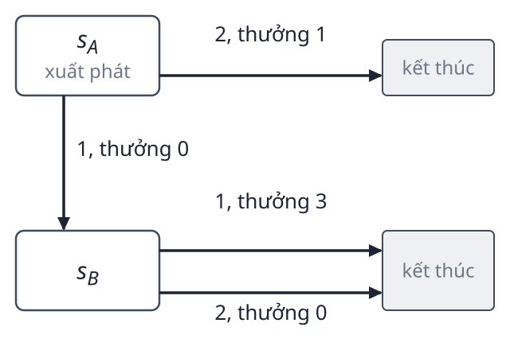
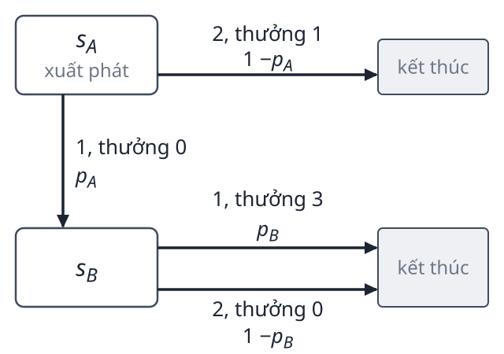
Lượt bắt đầu ở $s_A$ và kết thúc sau một hoặc hai bước; $\gamma=0{,}9$.
Tại $s_A$: hành động 1 chuyển sang $s_B$, phần thưởng $0$. Hành động 2 kết thúc lượt, phần thưởng $1$.
Tại $s_B$: hành động 1 kết thúc, phần thưởng $3$. Hành động 2 kết thúc, phần thưởng $0$.
Chính sách có một tham số cho mỗi trạng thái, $\theta=(\theta_A;\,\theta_B)$. Xác suất chọn hành động 1 tại $s$ là $p_s=\pi_\theta(1\mid s)=\sigma(\theta_s)$, với $\sigma(x)=1/(1+e^{-x})$.
Chính sách hiện tại: $\theta=(0;\,\log2)$, nên $p_A=\sigma(0)=\tfrac12$ và $p_B=\sigma(\log2)=1/(1+\tfrac12)=\tfrac23$. $J$ phụ thuộc $\theta$ qua $(p_A;\,p_B)$.
Ví dụ: chuỗi hai trạng thái (2)
Tính $J=\mathbb E[G_0]$ từ ba loại lượt, với $G_0=R_1+\gamma R_2$:
| Loại lượt | Xác suất | $G_0$ |
|---|---|---|
| $s_A\xrightarrow1s_B\xrightarrow1$ | $p_Ap_B=\tfrac12\cdot\tfrac23=\tfrac13$ | $0+0{,}9\cdot3=2{,}7$ |
| $s_A\xrightarrow1s_B\xrightarrow2$ | $p_A(1-p_B)=\tfrac12\cdot\tfrac13=\tfrac16$ | $0+0{,}9\cdot0=0$ |
| $s_A\xrightarrow2$ | $1-p_A=\tfrac12$ | $1$ |
Diễn giải: $J$ là giá trị của trạng thái xuất phát, $v_\pi(s_A)=1{,}4$. Từ $s_B$, $v_\pi(s_B)=\tfrac23\cdot3+\tfrac13\cdot0=2$.
Ví dụ: chuỗi hai trạng thái (3)
Với $\mathrm dp_s/\mathrm d\theta_s=p_s(1-p_s)$, gradient tại $\theta=(0;\,\log2)$:
$$\begin{aligned}\frac{\partial J}{\partial\theta_A}&=(2{,}7p_B-1)\,p_A(1-p_A)=0{,}8\cdot\tfrac14=0{,}2,\\ \frac{\partial J}{\partial\theta_B}&=2{,}7p_A\cdot p_B(1-p_B)=1{,}35\cdot\tfrac29=0{,}3.\end{aligned}$$Hàm điểm: $\log\sigma(\theta_s)$ có đạo hàm $1-p_s$, $\log(1-\sigma(\theta_s))$ có đạo hàm $-p_s$, nên
với $e_A=(1;\,0)$, $e_B=(0;\,1)$. Tại $s_A$: $\psi_A=+0{,}5$ khi chọn 1, $-0{,}5$ khi chọn 2.
Diễn giải: $\partial J/\partial\theta_A=0{,}2\gt0$, nên tăng $p_A$ làm $J$ tăng: tại $s_A$, hành động 1 cho lợi tức kỳ vọng $q_\pi(s_A,1)=0{,}9\cdot2=1{,}8$, hành động 2 cho $1$.
Ước lượng REINFORCE không chệch nhưng có phương sai lớn
Nhắc lại: $(p_A;\,p_B)=(\tfrac12;\,\tfrac23)$, $\partial J/\partial\theta_A=0{,}2$, $\psi_A=+0{,}5$ khi chọn 1, $-0{,}5$ khi chọn 2.
| Loại lượt | Xác suất | $G_0$ | $\psi_A$ | $\widehat g_A=G_0\psi_A$ | chiều đổi của $p_A$ |
|---|---|---|---|---|---|
| $s_A\xrightarrow1s_B\xrightarrow1$ | $p_Ap_B=\tfrac13$ | $2{,}7$ | $+0{,}5$ | $2{,}7\cdot0{,}5=1{,}35$ | tăng |
| $s_A\xrightarrow1s_B\xrightarrow2$ | $p_A(1-p_B)=\tfrac16$ | $0$ | $+0{,}5$ | $0$ | không đổi |
| $s_A\xrightarrow2$ | $1-p_A=\tfrac12$ | $1$ | $-0{,}5$ | $\color{#C62828}{\mathbf{-0{,}5}}$ | giảm |
| kỳ vọng | $\tfrac13\cdot1{,}35+\tfrac16\cdot0+\tfrac12\cdot(-0{,}5)=0{,}2$ | ||||
| phương sai | $\tfrac13\cdot1{,}35^2+\tfrac12\cdot0{,}5^2-0{,}2^2=0{,}6925$ | ||||
Kỳ vọng bằng $\partial J/\partial\theta_A=0{,}2$, nhưng với xác suất $\tfrac12$ một lượt cho ước lượng ngược dấu gradient.
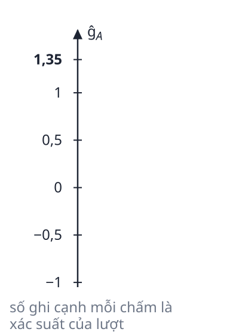
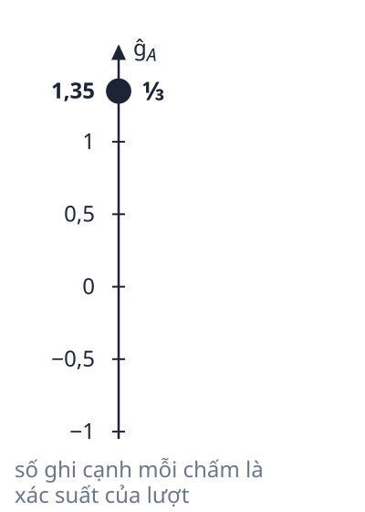
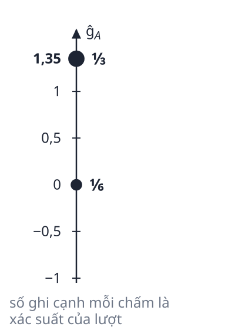
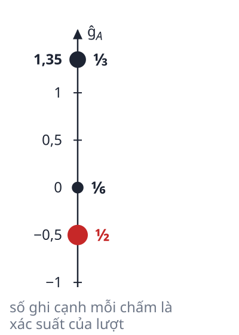
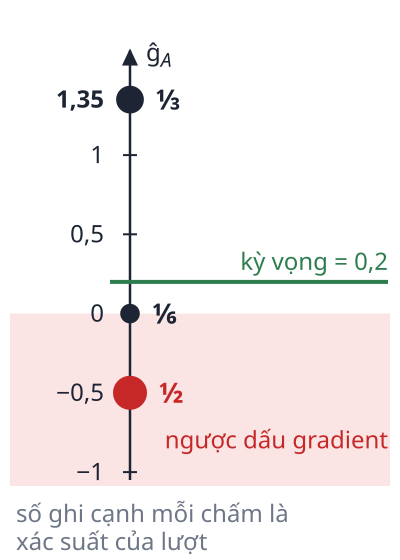
Câu hỏi nhanh: bước dài theo lượt $s_A\xrightarrow1s_B\xrightarrow1$
Nhắc lại: $\theta=(0;\,\log2)$, $p_s=\sigma(\theta_s)$, $J=2{,}7p_Ap_B+1-p_A=1{,}4$. Bước cập nhật là $\theta\leftarrow\theta+\alpha\widehat g$.
Câu hỏi: lượt $s_A\xrightarrow1s_B\xrightarrow1$ cho $\widehat g=(G_0\psi_A;\,\gamma G_1\psi_B)=(2{,}7\cdot0{,}5;\,0{,}9\cdot3\cdot\tfrac13)=(1{,}35;\,0{,}9)$. Với $\alpha=1$, $J$ tăng hay giảm?
Lời giải: tăng. Cả hai tọa độ của $\widehat g$ dương nên $p_A$, $p_B$ cùng tăng. $J$ tăng theo $p_B$, và tăng theo $p_A$ khi $2{,}7p_B\gt1$, đúng với $p_B\ge\tfrac23$.
Kiểm bằng số, $\theta=(1{,}35;\,\log2+0{,}9)$ cho $p=(\sigma(1{,}35);\,\sigma(\log2+0{,}9))=(0{,}794;\,0{,}831)$ và $J=2{,}7\cdot0{,}794\cdot0{,}831+1-0{,}794=1{,}988\gt1{,}4$.
Bước dài theo lượt $s_A\xrightarrow2$ làm $J$ giảm
Lượt $s_A\xrightarrow2$ cho $\widehat g=(-0{,}5;\,0)$. Bước $\theta\leftarrow\theta+\alpha\widehat g$ chỉ đổi $\theta_A=-0{,}5\alpha$, và $J=1+0{,}8\,p_A$ khi $p_B=\tfrac23$.
| $\alpha$ | $\theta_A$ | $p_A=\sigma(\theta_A)$ | $J=1+0{,}8p_A$ |
|---|---|---|---|
| $0$ | $0$ | $0{,}5$ | $1{,}4$ |
| $1$ | $-0{,}5$ | $0{,}378$ | $1{,}30$ |
| $2$ | $-1$ | $0{,}269$ | $1{,}22$ |
| $\to\infty$ | $\to-\infty$ | $\to0$ | $\to1$ |
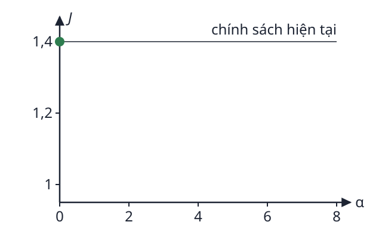
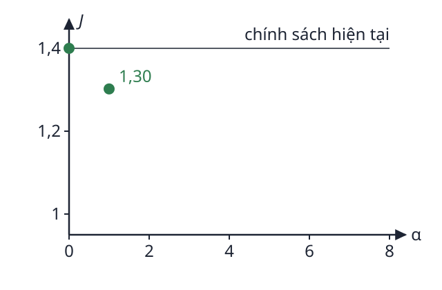
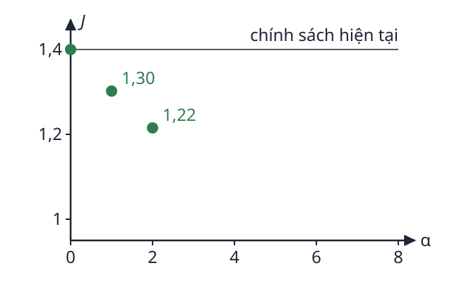
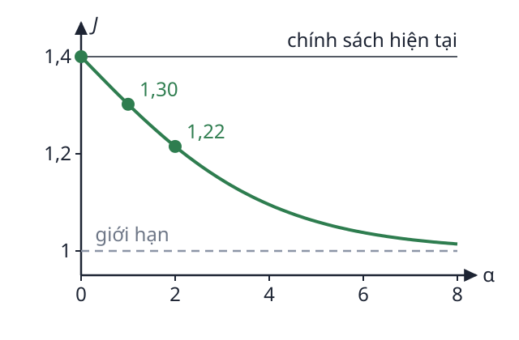
Cùng $\alpha$, chiều đổi của $J$ phụ thuộc lượt đã thu. Với lượt $s_A\xrightarrow2$, $J$ giảm $0{,}4$ khi $\alpha\to\infty$. Sau một bước, lượt đã thu là lượt của chính sách cũ và $\widehat g$ tính từ nó mất tính không chệch, nên REINFORCE dùng mỗi lượt cho đúng một bước.
Vấn đề trung tâm
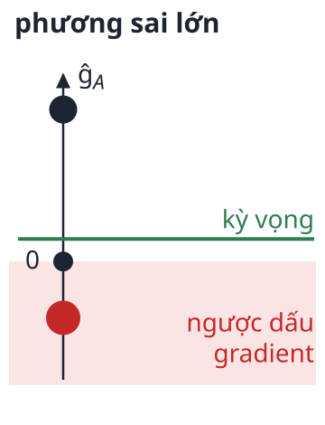
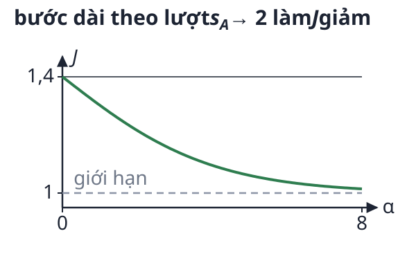
- Làm thế nào để ước lượng gradient chính sách có phương sai nhỏ mà kỳ vọng không đổi?
- Làm thế nào để dùng lượt của chính sách cũ cho bước cập nhật dài mà hàm mục tiêu không giảm?
Mục tiêu học tập
Sau bài này, sinh viên có thể:
- Giảm phương sai của ước lượng gradient chính sách mà giữ nguyên kỳ vọng.
- Ước lượng mức độ hành động đã chọn tốt hơn hay kém hơn mức kỳ vọng khi hàm giá trị phải học từ dữ liệu, và tính độ chệch, phương sai của ước lượng đó.
- Đánh giá chính sách mới từ lượt của chính sách cũ và chặn sai số của phép đánh giá.
- Thực hiện nhiều bước cập nhật trên cùng một bộ đệm mà vẫn giữ chính sách mới gần chính sách cũ.
Nội dung
2.Đường cơ sở và hàm lợi thế
So lợi tức với giá trị của trạng thái giữ nguyên kỳ vọng của ước lượng gradient và giảm phương sai.

REINFORCE tăng xác suất của hành động kém khi lợi tức dương
Trên chuỗi mọi lợi tức không âm. Lượt $s_A\xrightarrow2$ có $G_0=1\gt0$ nên tăng xác suất hành động 2, dù $q_\pi(s_A,2)=1\lt q_\pi(s_A,1)=1{,}8$.
Câu hỏi: lợi tức phải so với đại lượng nào để biết hành động đã chọn tốt hay kém?
Lợi tức từ $s_A$ có kỳ vọng $v_\pi(s_A)=\tfrac13\cdot2{,}7+\tfrac16\cdot0+\tfrac12\cdot1=1{,}4$. Hiệu $G_0-1{,}4$ dương khi lượt tốt hơn mức kỳ vọng, âm khi kém hơn.
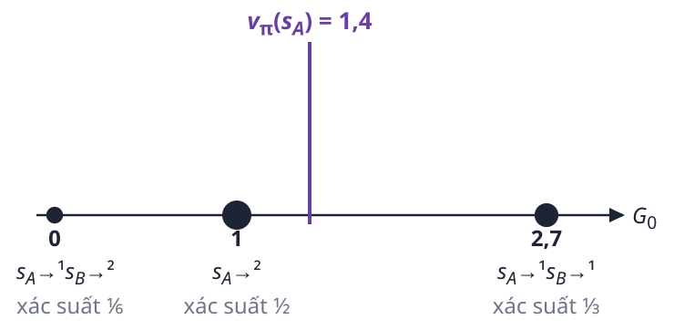
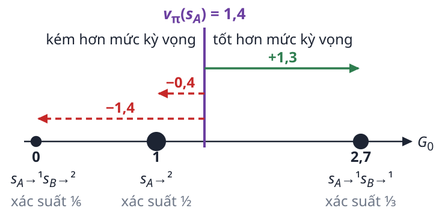
Định nghĩa. Đường cơ sở (baseline) là một hàm bị chặn $b:\mathcal S\to\mathbb R$. Ước lượng có đường cơ sở là $\widehat g_b=\sum_{t=0}^{T-1}\gamma^t\bigl(G_t-b(S_t)\bigr)\,\psi_t$.
Đường cơ sở chỉ phụ thuộc trạng thái không làm chệch ước lượng gradient
Mệnh đề (đường cơ sở). Giả thiết: giả thiết chung; thêm: lượt sinh bởi $\pi_\theta$, $b$ bị chặn và chỉ phụ thuộc trạng thái. Kết luận:
$$\mathbb E\Bigl[\sum_t\gamma^t\,b(S_t)\,\psi_t\Bigr]=0\quad\Longrightarrow\quad\mathbb E[\widehat g_b]=\nabla_\theta J(\theta).$$Chứng minh. Gọi $H_t$ là lịch sử tới $S_t$. Khi biết $H_t$, $b(S_t)$ là hằng, nên $\mathbb E[b(S_t)\psi_t\mid H_t]=b(S_t)\sum_a\pi_\theta(a\mid S_t)\nabla_\theta\log\pi_\theta(a\mid S_t)=b(S_t)\nabla_\theta\sum_a\pi_\theta(a\mid S_t)=0$.
Ý nghĩa: trên $s_A$, $\tfrac12\cdot0{,}5+\tfrac12\cdot(-0{,}5)=0$, nên trừ $1{,}4\,\psi_A$ không đổi kỳ vọng $0{,}2$.
Trên chuỗi, $b=v_\pi$ giữ kỳ vọng và giảm phương sai
Ở đây $b=v_\pi$, $b(s_A)=1{,}4$, chỉ có bước $t=0$, nên tọa độ $\theta_A$ của $\widehat g_b$ là $(G_0-1{,}4)\,\psi_A$.
| Loại lượt | Xác suất | $G_0-1{,}4$ | $\psi_A$ | $(G_0-1{,}4)\psi_A$ | chiều đổi của $p_A$ |
|---|---|---|---|---|---|
| $s_A\xrightarrow1s_B\xrightarrow1$ | $p_Ap_B=\tfrac13$ | $2{,}7-1{,}4=1{,}3$ | $+0{,}5$ | $1{,}3\cdot0{,}5=0{,}65$ | tăng |
| $s_A\xrightarrow1s_B\xrightarrow2$ | $p_A(1-p_B)=\tfrac16$ | $-1{,}4$ | $+0{,}5$ | $\color{#C62828}{\mathbf{-0{,}7}}$ | giảm |
| $s_A\xrightarrow2$ | $1-p_A=\tfrac12$ | $-0{,}4$ | $-0{,}5$ | $0{,}2$ | tăng |
| kỳ vọng | $\tfrac13\cdot0{,}65-\tfrac16\cdot0{,}7+\tfrac12\cdot0{,}2=0{,}2$ | ||||
| phương sai | $\tfrac13\cdot0{,}65^2+\tfrac16\cdot0{,}7^2+\tfrac12\cdot0{,}2^2-0{,}2^2=0{,}2025$ | ||||
Kỳ vọng giữ $0{,}2$, phương sai giảm từ $0{,}6925$ của REINFORCE xuống $0{,}2025$.
Lượt $s_A\xrightarrow1s_B\xrightarrow2$ có $G_0=0\lt v_\pi(s_A)=1{,}4$ do phần thưởng $0$ ở $s_B$, nên ước lượng giảm $p_A$ dù $q_\pi(s_A,1)=1{,}8\gt1{,}4$.
Mệnh đề đường cơ sở chỉ bảo đảm kỳ vọng, còn $b\ne v_\pi$ có thể tăng phương sai.
Câu hỏi nhanh: đường cơ sở phụ thuộc hành động
Nhắc lại: $q_\pi(s_A,1)=1{,}8$, $q_\pi(s_A,2)=1$; $\psi_A=\pm0{,}5$.
| Loại lượt | Xác suất | $G_0$ | $(G_0-1{,}4)\psi_A$ | $(G_0-q_\pi(s_A,A_0))\psi_A$ |
|---|---|---|---|---|
| $s_A\xrightarrow1s_B\xrightarrow1$ | $p_Ap_B=\tfrac13$ | $2{,}7$ | $0{,}65$ | ? $\to(2{,}7-1{,}8)\cdot0{,}5=0{,}45$ |
| $s_A\xrightarrow1s_B\xrightarrow2$ | $p_A(1-p_B)=\tfrac16$ | $0$ | $-0{,}7$ | ? $\to(0-1{,}8)\cdot0{,}5=-0{,}9$ |
| $s_A\xrightarrow2$ | $1-p_A=\tfrac12$ | $1$ | $0{,}2$ | ? $\to(1-1)\cdot(-0{,}5)=0$ |
| kỳ vọng | $0{,}2$ | ? $\to\tfrac13\cdot0{,}45-\tfrac16\cdot0{,}9+0=0$ | ||
Câu hỏi: trừ $q_\pi(S_t,A_t)$ thay cho $v_\pi(S_t)$ có giữ kỳ vọng $0{,}2$ không?
Lời giải: không. Kỳ vọng thành $0$. $q_\pi(S_t,A_t)$ phụ thuộc hành động đã chọn, trái giả thiết của mệnh đề đường cơ sở.
Hàm lợi thế
Khi biết $(S_t,A_t)=(s,a)$, lợi tức $G_t$ có kỳ vọng $q_\pi(s,a)$, nên hệ số $G_t-v_\pi(S_t)$ có kỳ vọng có điều kiện $q_\pi(s,a)-v_\pi(s)$.
Định nghĩa. Cho chính sách Markov dừng $\pi$ với giá trị trạng thái $v_\pi$ và giá trị hành động $q_\pi$. Hàm lợi thế (advantage function) của $\pi$ là

Ý nghĩa: $A_\pi(s,a)\gt0$ khi thực hiện $a$ tại $s$ rồi theo $\pi$ cho lợi tức kỳ vọng lớn hơn $v_\pi(s)$. Lợi thế là đại lượng của chính sách, xác định bởi kỳ vọng. Hiệu $G_t-v_\pi(S_t)$ trên một lượt là một ước lượng của nó.
Trên chuỗi: $A_\pi(s_A,\cdot)=(1{,}8-1{,}4;\,1-1{,}4)=(0{,}4;\,-0{,}4)$, $A_\pi(s_B,\cdot)=(3-2;\,0-2)=(1;\,-2)$.
Gradient dạng lợi thế
Hệ quả. Giả thiết: giả thiết chung, $A_\pi$ là lợi thế của $\pi=\pi_\theta$. Kết luận:
$$\nabla_\theta J(\theta)=\mathbb E\Bigl[\sum_{t=0}^{T-1}\gamma^t\,A_\pi(S_t,A_t)\,\psi_t\Bigr].$$Ý nghĩa: hướng tăng của $J$ là kỳ vọng của các hàm điểm, mỗi hàm điểm nhân với lợi thế của hành động đã chọn.
Ở đây chỉ bước $t=0$ góp vào tọa độ $\theta_A$: $A_\pi(s_A,A_0)=\pm0{,}4$, $\psi_0=\pm0{,}5$, nên $\tfrac12\cdot0{,}4\cdot0{,}5+\tfrac12\cdot(-0{,}4)\cdot(-0{,}5)=0{,}2$.
Lợi thế phải là của chính $\pi_\theta$. Chính sách đều $\bar\pi=(\tfrac12;\,\tfrac12)$ có $\bar v=(\tfrac12(0{,}9\cdot1{,}5+1);\,\tfrac12\cdot3)=(1{,}175;\,1{,}5)$, nên lợi thế $\bar A=A_{\bar\pi}$ tại $s_A$ là $(1{,}35-1{,}175;\,1-1{,}175)=(0{,}175;\,-0{,}175)$ và tọa độ $\theta_A$ là $\tfrac12\cdot0{,}175\cdot0{,}5+\tfrac12(-0{,}175)(-0{,}5)=0{,}0875\ne0{,}2$.
Ý tưởng chứng minh: gradient dạng lợi thế
Ký hiệu: $H_t$ là lịch sử tới $S_t$.
Đường cơ sở $b=v_\pi$: $\nabla_\theta J=\sum_t\gamma^t\,\mathbb E\bigl[(G_t-v_\pi(S_t))\,\psi_t\bigr]$.
Tính chất tháp theo $(H_t,A_t)$ (tower property): $\psi_t$ và $v_\pi(S_t)$ là hàm của $(H_t,A_t)$, nên ra ngoài kỳ vọng có điều kiện:
Tính Markov: $\mathbb E[G_t\mid H_t,A_t]=q_\pi(S_t,A_t)$, và $q_\pi-v_\pi=A_\pi$. $\square$
Câu hỏi: vì sao bước tính Markov cần chính sách Markov dừng?
Lời giải: để phần tương lai của lượt, khi biết $(H_t,A_t)$, chỉ phụ thuộc $(S_t,A_t)$. Khi đó kỳ vọng của $G_t$ là $q_\pi(S_t,A_t)$.
Sai số TD với giá trị đúng và hàm lợi thế
$G_t$ chứa mọi phần thưởng ngẫu nhiên sau bước $t$. $R_{t+1}+\gamma v_\pi(S_{t+1})$ có cùng kỳ vọng có điều kiện $q_\pi(S_t,A_t)$ và chỉ chứa phần ngẫu nhiên của một bước.
Nhắc lại: sai số sai phân thời gian (temporal-difference error, sai số TD, Bài 05) với giá trị $v_\pi$, $v_\pi=0$ tại trạng thái kết thúc, là $\delta_t=R_{t+1}+\gamma\,v_\pi(S_{t+1})-v_\pi(S_t)$.
Mệnh đề. Giả thiết: giả thiết chung; thêm: giá trị dùng trong $\delta_t$ là $v_\pi$ đúng. Kết luận: $\mathbb E[\delta_t\mid S_t=s,A_t=a]=A_\pi(s,a)$.
Chứng minh. Phương trình Bellman: $\mathbb E[R_{t+1}+\gamma v_\pi(S_{t+1})\mid s,a]=q_\pi(s,a)$. Trừ $v_\pi(s)$.
Lưu ý: điều kiện theo cặp $(S_t,A_t)$. Theo riêng $S_t$, $\mathbb E[\delta_t\mid S_t]=0$.
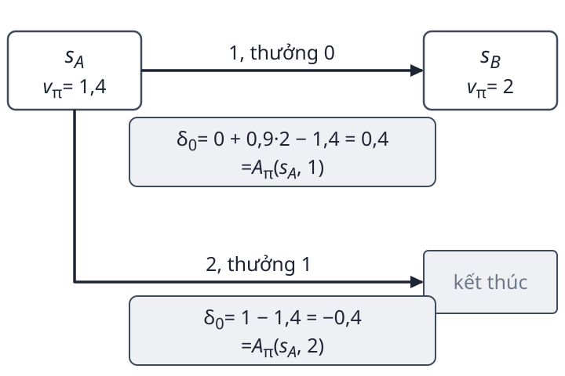
Ba ước lượng gradient trên chuỗi hai trạng thái
Nhắc lại: $v_\pi=(1{,}4;\,2)$; $\psi_A=+0{,}5$ khi chọn 1, $-0{,}5$ khi chọn 2. Tọa độ $\theta_A$ của ba ước lượng:
| Loại lượt | $G_0\psi_A$ | $(G_0-1{,}4)\psi_A$ | $\delta_0$ | $\delta_0\psi_A$ |
|---|---|---|---|---|
| $s_A\xrightarrow1s_B\xrightarrow1$ | $2{,}7\cdot0{,}5=1{,}35$ | $1{,}3\cdot0{,}5=0{,}65$ | $0+0{,}9\cdot2-1{,}4=0{,}4$ | $0{,}2$ |
| $s_A\xrightarrow1s_B\xrightarrow2$ | $0$ | $-0{,}7$ | như hàng trên | $0{,}2$ |
| $s_A\xrightarrow2$ | $-0{,}5$ | $0{,}2$ | $1-1{,}4=-0{,}4$ | $0{,}2$ |
$\delta_0$ chỉ dùng bước đầu, nên hai lượt đầu cho cùng $\delta_0$: phần ngẫu nhiên ở $s_B$ không còn trong ước lượng.
Ba ước lượng có cùng kỳ vọng và phương sai giảm dần
Xác suất ba loại lượt: $p_Ap_B=\tfrac13$, $p_A(1-p_B)=\tfrac16$, $1-p_A=\tfrac12$.
| Ước lượng (tọa độ $\theta_A$) | Kỳ vọng | Phương sai | Xác suất ngược dấu |
|---|---|---|---|
| $G_0\psi_A$ | $\tfrac13\cdot1{,}35+\tfrac12\cdot(-0{,}5)$ $=0{,}2$ | $\tfrac13\cdot1{,}35^2+\tfrac12\cdot0{,}5^2-0{,}2^2$ $=0{,}6925$ | $\tfrac12$ |
| $(G_0-v_\pi(s_A))\psi_A$ | $\tfrac13\cdot0{,}65-\tfrac16\cdot0{,}7+\tfrac12\cdot0{,}2$ $=0{,}2$ | $\tfrac13\cdot0{,}65^2+\tfrac16\cdot0{,}7^2$ $+\tfrac12\cdot0{,}2^2-0{,}2^2=0{,}2025$ | $\tfrac16$ |
| $\delta_0\psi_A$ với $v_\pi$ | $0{,}2$ | $0$ | $0$ |
Ba ước lượng có cùng kỳ vọng $\partial J/\partial\theta_A=0{,}2$. Hai ước lượng sau cần $v_\pi$, mà $v_\pi$ chưa biết khi chỉ có dữ liệu.
3.Ước lượng lợi thế: độ chệch và phương sai
Tổ hợp có trọng số các ước lượng lợi thế nhiều bước cân bằng độ chệch và phương sai.

Critic và actor
$v_\pi$ chưa biết, nên được thay bằng một hàm giá trị $\hat v(s,w)$ học từ dữ liệu. Hàm học từ ít dữ liệu có thể sai.
Trên chuỗi, giả sử $\hat v=(1{,}4;\,1)$, học từ ít lượt qua $s_B$: đúng ở $s_A$, thấp hơn $v_\pi(s_B)=2$ một đơn vị.
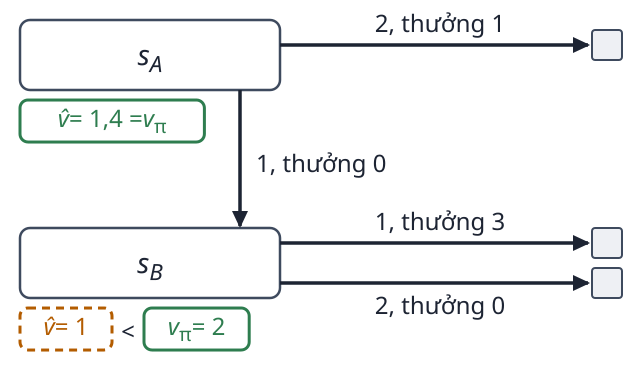
Định nghĩa. Hàm $\hat v(\cdot,w)$ gọi là critic khi nó đánh giá hành động $A_t$ qua mục tiêu một bước $R_{t+1}+\gamma(1-Z_{t+1})\,\hat v(S_{t+1},w)$, trong đó $Z_{t+1}=1$ khi $S_{t+1}$ là trạng thái kết thúc. Chính sách $\pi_\theta$ gọi là actor. Phương pháp actor–critic cập nhật $\theta$ theo hệ số lập từ critic, và cập nhật $w$ để $\hat v$ xấp xỉ $v_\pi$.
Hai ước lượng lợi thế khi critic sai
Nhắc lại: $\hat v=(1{,}4;\,1)$, $v_\pi=(1{,}4;\,2)$, $\delta_0=R_1+\gamma\hat v(s_B)-\hat v(s_A)$. Cần ước lượng $A_\pi(s_A,1)=0{,}4$ từ lượt bắt đầu bằng hành động 1 ở $s_A$.
| Lượt, xác suất khi $A_0=1$ | Một bước: $\delta_0$ | Cả lượt: $G_0-\hat v(s_A)$ |
|---|---|---|
| (i) $s_A\xrightarrow1s_B\xrightarrow1$, $\tfrac23$ | $0+0{,}9\cdot1-1{,}4=-0{,}5$ | $0+0{,}9\cdot3-1{,}4=1{,}3$ |
| (ii) $s_A\xrightarrow1s_B\xrightarrow2$, $\tfrac13$ | như (i), $-0{,}5$ | $0-1{,}4=-1{,}4$ |
| kỳ vọng | $-0{,}5$ | $\tfrac23\cdot1{,}3-\tfrac13\cdot1{,}4=0{,}4$ |
| độ chệch $=$ kỳ vọng $-\,0{,}4$ | $-0{,}5-0{,}4=-0{,}9$ | $0$ |
| phương sai | $0$ | $\tfrac23\cdot1{,}3^2+\tfrac13\cdot1{,}4^2-0{,}4^2=1{,}62$ |
Lưu ý: độ chệch là kỳ vọng trừ $A_\pi(s_A,1)$, không phải sai số của một lượt.
Ước lượng một bước chệch $-0{,}9=\gamma\bigl(\hat v(s_B)-v_\pi(s_B)\bigr)$ và có kỳ vọng sai dấu. Ước lượng cả lượt không chệch, phương sai $1{,}62$.
Lợi thế $n$ bước
Lợi thế $n$ bước dùng $n$ phần thưởng quan sát được, phần còn lại lấy từ critic.
Định nghĩa. Với $\hat v$ cố định và $t\lt T$, lợi tức $n$ bước ($n$-step return) và lợi thế $n$ bước là
$$G_{t:t+n}=\sum_{k=0}^{n-1}\gamma^kR_{t+k+1}+\gamma^n\hat v(S_{t+n})\ \ (t+n\lt T),\qquad \widehat A^{(n)}_t=G_{t:t+n}-\hat v(S_t),$$với $G_{t:t+n}=G_t$ khi $t+n\ge T$.
Bổ đề. Với critic cố định trong lượt, $\widehat A^{(n)}_t=\sum_{k\lt n}\gamma^k\delta_{t+k}$, với quy ước $\delta_j=0$ khi $j\ge T$, $\hat v(S_T)=0$. Chứng minh. Số hạng $\gamma^{k+1}\hat v(S_{t+k+1})$ của $\gamma^k\delta_{t+k}$ triệt tiêu với số hạng $-\gamma^{k+1}\hat v(S_{t+k+1})$ của $\gamma^{k+1}\delta_{t+k+1}$.
Trên lượt (i): $\widehat A^{(1)}_0=\delta_0=-0{,}5$; $\widehat A^{(2)}_0=G_0-\hat v(s_A)=1{,}3$; $\delta_1=3-\hat v(s_B)=2$ và $1{,}3=-0{,}5+0{,}9\cdot2=\delta_0+\gamma\delta_1$.
Ước lượng lợi thế tổng quát
Giữa một bước và cả lượt có các lợi thế $n$ bước, kết hợp được theo trọng số.
Định nghĩa. Với $\lambda\in[0,1)$, lợi tức λ (λ-return) là trung bình có trọng số $(1-\lambda)\lambda^{n-1}$ của các lợi tức $n$ bước,
Ước lượng lợi thế tổng quát (generalized advantage estimation, GAE) là $\widehat A_t=G^\lambda_t-\hat v(S_t)$. Với $\lambda=1$, quy ước $G^1_t=G_t$.
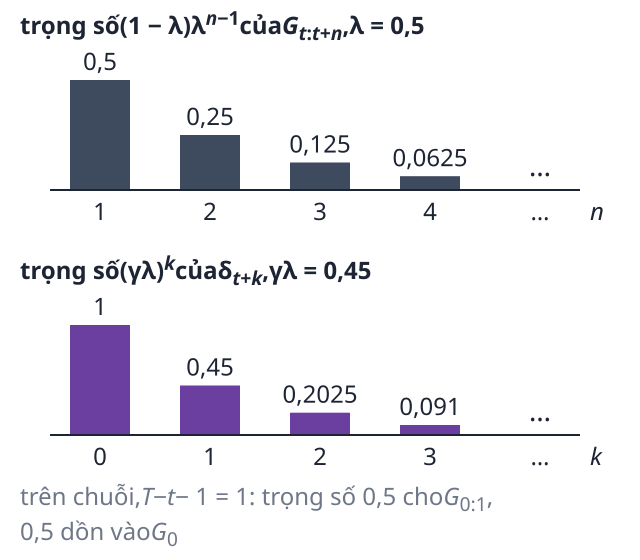
Ý nghĩa: $\lambda$ nhỏ dựa nhiều vào critic, $\lambda$ gần $1$ dựa nhiều vào phần thưởng quan sát được.
Ở đây, với $\lambda=0{,}5$, trọng số $\tfrac12$ cho $n=1$ và $\tfrac12$ cho cả lượt: lượt (i) cho $\widehat A_0=\tfrac12(-0{,}5)+\tfrac12\cdot1{,}3=0{,}4$, lượt (ii) cho $\tfrac12(-0{,}5)+\tfrac12(-1{,}4)=-0{,}95$.
Dạng tổng và công thức truy hồi của GAE
Mệnh đề. Giả thiết: $\hat v$ cố định trong lượt, $\delta_j=0$ khi $j\ge T$, $\hat v(S_T)=0$, $\lambda\in[0,1]$. Kết luận:
(a) $\widehat A_t=\sum_{k=0}^{T-t-1}(\gamma\lambda)^k\,\delta_{t+k}$. (b) $\lambda=0$ cho $\widehat A_t=\delta_t$, $\lambda=1$ cho $\widehat A_t=G_t-\hat v(S_t)$.
$$\text{(c)}\quad\widehat A_t=\delta_t+\gamma\lambda\,(1-Z_{t+1})\,\widehat A_{t+1},\qquad\widehat A_T=0.$$Ý nghĩa: mọi $\widehat A_t$ của một lượt tính được bằng một lượt quét lùi.

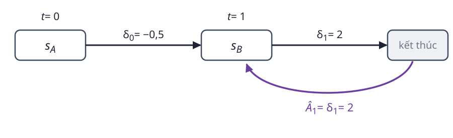

Trên lượt (i), $\delta_1=2$, $\delta_0=-0{,}5$, $\gamma\lambda=0{,}45$: $\widehat A_1=2$, $\widehat A_0=-0{,}5+0{,}45\cdot2=0{,}4$.
Ý tưởng chứng minh: dạng tổng và công thức truy hồi của GAE
Bước 1 (thay lợi thế $n$ bước): $\widehat A_t=(1-\lambda)\sum_{n\ge1}\lambda^{n-1}\widehat A^{(n)}_t$, và mỗi $\widehat A^{(n)}_t=\sum_{k\lt n}\gamma^k\delta_{t+k}$ (tổng lồng nhau).
Bước 2 (đổi thứ tự lấy tổng): trọng số của $\gamma^k\delta_{t+k}$ là $(1-\lambda)\sum_{n\gt k}\lambda^{n-1}=\lambda^k$.
Bước 3 (hai đầu mút): $\lambda=0$ giữ số hạng $k=0$. $\lambda=1$ được xét riêng vì thừa số $1-\lambda$ bằng $0$: khi đó $\widehat A_t=G_t-\hat v(S_t)=\sum_k\gamma^k\delta_{t+k}$.
Bước 4 (truy hồi): tách số hạng $k=0$ của (a) được $\delta_t+\gamma\lambda\widehat A_{t+1}$. $\square$
Câu hỏi: vì sao Bước 1 cần critic cố định trong cả lượt?
Lời giải: để $\hat v(S_{t+1})$ trong $\delta_t$ và trong $\delta_{t+1}$ là cùng một số, nên triệt tiêu trong tổng lồng nhau.
Tham số $\lambda$ cân bằng độ chệch và phương sai
$\widehat A_0=\delta_0+0{,}9\lambda\,\delta_1$ trên hai lượt, critic $(1{,}4;\,1)$, mục tiêu $A_\pi(s_A,1)=0{,}4$:
| Lượt, xác suất khi $A_0=1$ | $\lambda=0$ | $\lambda=0{,}5$ | $\lambda=1$ |
|---|---|---|---|
| (i), $\tfrac23$: $\delta_1=3-1=2$ | $-0{,}5$ | $-0{,}5+0{,}45\cdot2=0{,}4$ | $-0{,}5+0{,}9\cdot2=1{,}3$ |
| (ii), $\tfrac13$: $\delta_1=0-1=-1$ | $-0{,}5$ | $-0{,}5-0{,}45=-0{,}95$ | $-0{,}5-0{,}9=-1{,}4$ |
| kỳ vọng $-0{,}5+0{,}9\lambda$ | $-0{,}5$ | $-0{,}05$ | $0{,}4$ |
| độ chệch $-0{,}9(1-\lambda)$ | $-0{,}9$ | $-0{,}45$ | $0$ |
| phương sai $\tfrac29(2{,}7\lambda)^2=1{,}62\lambda^2$ | $0$ | $0{,}405$ | $1{,}62$ |
$\lambda$ tăng thì độ chệch giảm, phương sai tăng. Với $\lambda=0{,}5$, kỳ vọng là $-0{,}05$. Giá trị $0{,}4$ của lượt (i) chỉ đúng trên lượt đó.
GAE không làm chệch ước lượng gradient khi $\lambda=1$ hoặc critic đúng
Mệnh đề. Giả thiết: giả thiết chung; thêm: critic cố định, bị chặn; GAE tính trên lượt đầy đủ. Kết luận: nếu $\lambda=1$, hoặc $\hat v=v_\pi$ và $\lambda$ tùy ý, thì
$$\mathbb E\Bigl[\sum_t\gamma^t\,\widehat A_t\,\psi_t\Bigr]=\nabla_\theta J(\theta).$$Trên chuỗi, với critic $(1{,}4;\,1)$, tọa độ $\theta_A$ của kỳ vọng là $\tfrac12\cdot(-0{,}5+0{,}9\lambda)\cdot0{,}5+\tfrac12\cdot(-0{,}4)\cdot(-0{,}5)=-0{,}025+0{,}225\lambda$: $-0{,}025$; $0{,}0875$; $0{,}2$ với $\lambda=0$; $0{,}5$; $1$.
Lưu ý: mệnh đề nói về gradient, không về lợi thế. Với $\lambda=1$, tại $s_B$, $\widehat A_1=R_2-\hat v(s_B)$ có kỳ vọng $(3-1;\,0-1)=(2;\,-1)$, chệch $+1$ so với $A_\pi(s_B,\cdot)=(1;\,-2)$.
Ý tưởng chứng minh: GAE và gradient
Bước 1 (trường hợp $\lambda=1$): $\widehat A_t=G_t-\hat v(S_t)$, và $\hat v$ là một đường cơ sở. Áp dụng mệnh đề đường cơ sở.
Bước 2 (trường hợp $\hat v=v_\pi$, tách theo $k$): $\widehat A_t=\sum_k(\gamma\lambda)^k\delta_{t+k}$; xét từng $\mathbb E[\delta_{t+k}\psi_t]$.
Bước 3 (các số hạng $k\ge1$ bằng $0$): $\psi_t$ là hàm của $H_{t+k}$, nên
Bước 4 (số hạng $k=0$): $\mathbb E[\delta_t\psi_t]=\mathbb E[A_\pi(S_t,A_t)\psi_t]$. Bước 5 (cộng theo $t$): gradient dạng lợi thế. $\square$
Câu hỏi: ở Bước 3, critic đúng được dùng ở đâu?
Lời giải: ở kỳ vọng có điều kiện của $\delta_{t+k}$: chỉ khi $\hat v=v_\pi$ nó bằng $A_\pi(S_{t+k},A_{t+k})$. Với critic sai, còn một số hạng chệch không bị khử.
Câu hỏi nhanh: một vòng cập nhật với GAE
Lượt (i), $\lambda=0{,}5$: $\widehat A_0=0{,}4$ tại $(s_A,1)$, $\widehat A_1=2$ tại $(s_B,1)$. Actor: $\theta\leftarrow\theta+\alpha_\theta\sum_t\gamma^t\,\widehat A_t\,\psi_t$, $\alpha_\theta=1$. Critic dạng bảng $\hat v(s,w)=w_s$, $w=(1{,}4;\,1)$: $w_{S_t}\leftarrow w_{S_t}+\alpha_w(\widehat A_t+\hat v(S_t)-w_{S_t})$, $\alpha_w=0{,}5$.
Câu hỏi: từ $\theta=(0;\,\log2)$, tham số, chính sách và critic mới bằng bao nhiêu?
Lời giải:
Ước lượng lợi thế: $\widehat A_1=\delta_1=2$, $\widehat A_0=-0{,}5+0{,}45\cdot2=0{,}4$.
Cập nhật actor: $\theta_A=0+1\cdot0{,}4\cdot0{,}5=0{,}2$, $p_A=\sigma(0{,}2)=0{,}550$; $\theta_B=\log2+0{,}9\cdot2\cdot\tfrac13=\log2+0{,}6$, $p_B=\sigma(1{,}293)=0{,}785$.
Cập nhật critic: $w_A=1{,}4+0{,}5(1{,}8-1{,}4)=1{,}6$, $w_B=1+0{,}5(3-1)=2$.
Thuật toán actor–critic với GAE
Ước lượng REINFORCE có phương sai lớn. Actor–critic thay lợi tức bằng lợi thế GAE $\widehat A_t$ lập từ critic.
Thuật toán. Đầu vào: chính sách $\pi_\theta$, critic $\hat v(s,w)$; $\gamma\in[0,1)$, $\lambda\in[0,1]$; bước học $\alpha_\theta$, $\alpha_w$. Đầu ra: $\theta$, $w$.
Lặp với mỗi lượt, dừng sau số lượt đã định:
- Thu lượt: một lượt $S_0,A_0,R_1,\dots,S_T$ bằng $\pi_\theta$; giữ $w_{\mathrm{old}}=w$.
- Ước lượng lợi thế: $\delta_t$ với $\hat v(\cdot,w_{\mathrm{old}})$; $\widehat A_T=0$, tính lùi $\widehat A_t=\delta_t+\gamma\lambda(1-Z_{t+1})\widehat A_{t+1}$.
- Cập nhật actor: $\theta\leftarrow\theta+\alpha_\theta\sum_t\gamma^t\widehat A_t\,\psi_\theta(S_t,A_t)$.
- Cập nhật critic: $w\leftarrow w+\alpha_w\sum_t\bigl(\widehat A_t+\hat v(S_t,w_{\mathrm{old}})-\hat v(S_t,w)\bigr)\nabla_w\hat v(S_t,w)$.
Mỗi lượt chỉ cho một bước cập nhật, vì các ước lượng cần lượt của chính sách đang được cập nhật.
4.Hàm thay thế và miền tin cậy
Chính sách mới được đánh giá từ dữ liệu của chính sách cũ với sai số nhỏ khi hai chính sách gần nhau.
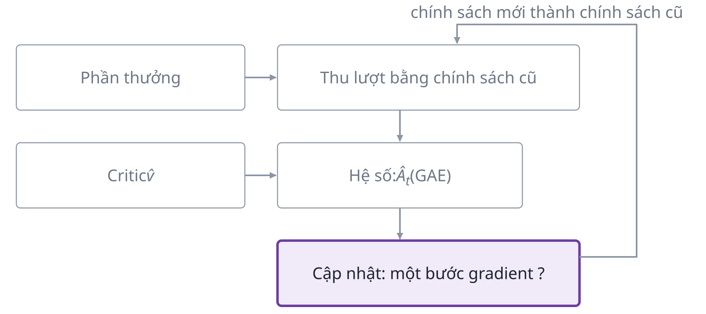
Đánh giá chính sách mới từ lượt của chính sách cũ
Một bước cập nhật dài cần đánh giá chính sách mới trước khi chạy nó, chỉ từ các lượt sinh bởi chính sách cũ $\pi$.
Câu hỏi: ước lượng $J$ của chính sách mới từ lượt của $\pi$ thế nào?
Giả sử một bước dài cho chính sách ứng viên $\tilde\theta=(\log9;\,0)$.
| $\pi$ | $\tilde\pi$ | |
|---|---|---|
| $\theta$ | $(0;\,\log2)$ | $(\log9;\,0)$ |
| $p_A=\sigma(\theta_A)$ | $0{,}5$ | $0{,}9$ |
| $p_B=\sigma(\theta_B)$ | $\tfrac23$ | $0{,}5$ |
| $J=2{,}7p_Ap_B+1-p_A$ | $1{,}4$ | $2{,}7\cdot0{,}45+0{,}1=1{,}315$ |
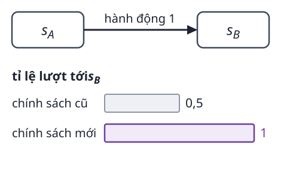

Xác suất thăm $s_B$ là $0{,}5$ dưới $\pi$ và $0{,}9$ dưới $\tilde\pi$, nhưng tại $s_B$, $\tilde\pi$ chọn hành động 1 ít hơn. Lượt của $\pi$ chỉ thăm $s_B$ ở một nửa số lượt.
Lợi thế của $\pi'$ so với $\pi$ tại một trạng thái
Nhắc lại: $q_\pi(s_A,\cdot)=(1{,}8;\,1)$, $q_\pi(s_B,\cdot)=(3;\,0)$, $v_\pi=(1{,}4;\,2)$.
Ký hiệu: $\pi'$ là chính sách mới bất kỳ, $\tilde\pi=(0{,}9;\,0{,}5)$ là một trường hợp.
Câu hỏi: tại $s$, chọn một hành động theo $\pi'$ rồi từ bước sau theo $\pi$. So với theo $\pi$ ngay từ $s$, lợi tức kỳ vọng thay đổi bao nhiêu?
Định nghĩa. Lợi thế của $\pi'$ so với $\pi$ tại $s$ là
Dạng khác: $A_\pi(s,\pi')=\sum_a\pi'(a\mid s)\,A_\pi(s,a)$.
Với $\pi'=\tilde\pi$: $A_\pi(s_A,\tilde\pi)=0{,}9\cdot1{,}8+0{,}1\cdot1-1{,}4=0{,}32$; $A_\pi(s_B,\tilde\pi)=0{,}5\cdot3+0{,}5\cdot0-2=-0{,}5$.
Bổ đề hiệu hiệu năng
Bổ đề (hiệu hiệu năng, performance difference lemma). Giả thiết: giả thiết chung cho hai chính sách $\pi$, $\pi'$ (cùng $P$, cùng $\mu_0$).
Ký hiệu: số lần thăm có chiết khấu của $s$ dưới $\pi'$ là $\eta_{\pi'}(s)=\sum_{t\ge0}\gamma^t\Pr_{\pi'}(S_t=s,\,t\lt T)$.
Kết luận:
Ý nghĩa: $J(\pi')-J(\pi)$ là tổng của lợi thế $A_\pi(s,\pi')$ theo trọng số $\eta_{\pi'}(s)$.
Trên chuỗi, với $\pi'=\tilde\pi$: $\eta_{\tilde\pi}=(1;\,\gamma\tilde p_A)=(1;\,0{,}81)$ và $1\cdot0{,}32+0{,}81\cdot(-0{,}5)=-0{,}085=J(\tilde\pi)-J(\pi)$.
Ý tưởng chứng minh: bổ đề hiệu hiệu năng
Bước 1 (một bước): $A_\pi(s,a)=r(s,a)+\gamma\sum_{s'}P(s'\mid s,a)v_\pi(s')-v_\pi(s)$ với $r(s,a)=\mathbb E[R_{t+1}\mid S_t=s,A_t=a]$, không chứa $\pi'$.
Bước 2 (tính chất tháp trên quỹ đạo của $\pi'$): $\mathbb E_{\pi'}\bigl[A_\pi(S_t,A_t)\bigr]=\mathbb E_{\pi'}[\delta_t]$, $\delta_t$ là sai số TD với $v_\pi$.
Bước 3 (tổng lồng nhau tới $K$): cộng theo $t\lt K$ với trọng số $\gamma^t$, các số hạng $v_\pi$ triệt tiêu, còn $\sum_{t\lt K}\gamma^tR_{t+1}+\gamma^Kv_\pi(S_K)-v_\pi(S_0)$.
Bước 4 (qua giới hạn): $K\to\infty$, cùng $\mu_0$ cho $J(\pi')-J(\pi)$. Bước 5 (dạng chiếm dụng): gom theo trạng thái được $\sum_s\eta_{\pi'}(s)A_\pi(s,\pi')$. $\square$
Câu hỏi: vì sao ở Bước 2 kỳ vọng dưới $\pi'$ của $R_{t+1}+\gamma v_\pi(S_{t+1})$ bằng $q_\pi(S_t,A_t)$, dù lượt chạy theo $\pi'$?
Lời giải: khi biết $(S_t,A_t)$, bước chuyển chỉ phụ thuộc động lực $P$, chung cho hai chính sách.
Ví dụ: bổ đề hiệu hiệu năng trên chuỗi
Với $\tilde\pi$: $\eta_{\tilde\pi}(s_A)=1$ (chỉ thăm ở $t=0$); $\eta_{\tilde\pi}(s_B)=\gamma\cdot\Pr_{\tilde\pi}(S_1=s_B)=\gamma\tilde p_A=0{,}9\cdot0{,}9=0{,}81$.
| $s$ | $A_\pi(s,\tilde\pi)$ | $\eta_{\tilde\pi}(s)$ | $\eta_{\tilde\pi}A_\pi$ |
|---|---|---|---|
| $s_A$ | $0{,}32$ | $1$ | $0{,}32$ |
| $s_B$ | $-0{,}5$ | $0{,}81$ | $-0{,}405$ |
| tổng | $J(\tilde\pi)-J(\pi)=-0{,}085$ |
Giá trị tính trực tiếp $J(\tilde\pi)-J(\pi)=1{,}315-1{,}4=-0{,}085$ trùng tổng của bảng.
Ở đây $\pi'=\tilde\pi$, $\eta_{\pi'}=(1;\,0{,}81)$, $A_\pi(\cdot,\pi')=(0{,}32;\,-0{,}5)$.
Bỏ giả thiết cùng $\mu_0$: nếu $\tilde\pi$ xuất phát từ $s_B$ còn $\pi$ từ $s_A$, vế trái là $v_{\tilde\pi}(s_B)-v_\pi(s_A)=0{,}5\cdot3-1{,}4=0{,}1$, vế phải là $A_\pi(s_B,\tilde\pi)=-0{,}5$. Hai vế khác dấu, nên bổ đề cần cùng $\mu_0$.
Hàm thay thế
Vế phải của bổ đề hiệu hiệu năng cần $\eta_{\pi'}$, tức cần chạy $\pi'$. Thay $\eta_{\pi'}$ bằng $\eta_\pi$.
Định nghĩa. Hàm thay thế (surrogate objective) của $\pi'$ quanh $\pi$ là
Ký hiệu: $\Delta J=J(\pi')-J(\pi)$, $\Delta\mathcal L=\mathcal L_\pi(\pi')-J(\pi)$.
Ý nghĩa: $\eta_\pi$ và $A_\pi(s,a)$ là của $\pi$, còn $A_\pi(s,\pi')$ chỉ cần thêm $\pi'(a\mid s)$. Do đó $\mathcal L_\pi(\pi')$ tính được từ lượt của $\pi$ mà không cần chạy $\pi'$.
Tỉ số chính sách
Lượt cũ chỉ chứa hành động do $\pi$ chọn, còn $A_\pi(s,\pi')$ lấy kỳ vọng theo $\pi'$.
Định nghĩa. Với điều kiện hỗ trợ $\pi'(a\mid s)\gt0\Rightarrow\pi(a\mid s)\gt0$, tỉ số chính sách (probability ratio) là $\rho(s,a)=\pi'(a\mid s)/\pi(a\mid s)$.
Dạng khác: $A_\pi(s,\pi')=\sum_a\pi(a\mid s)\,\rho(s,a)\,A_\pi(s,a)=\mathbb E_{a\sim\pi(\cdot\mid s)}\bigl[\rho(s,a)A_\pi(s,a)\bigr]$.
| $(s,a)$ | $\pi(a\mid s)$ | $\tilde\pi(a\mid s)$ | $\rho$ | $A_\pi(s,a)$ | $\pi\,\rho\,A_\pi$ |
|---|---|---|---|---|---|
| $(s_A,1)$ | $0{,}5$ | $0{,}9$ | $0{,}9/0{,}5=1{,}8$ | $0{,}4$ | $0{,}5\cdot1{,}8\cdot0{,}4=0{,}36$ |
| $(s_A,2)$ | $0{,}5$ | $0{,}1$ | $0{,}2$ | $-0{,}4$ | $-0{,}04$ |
| $(s_B,1)$ | $\tfrac23$ | $0{,}5$ | $0{,}75$ | $1$ | $0{,}5$ |
| $(s_B,2)$ | $\tfrac13$ | $0{,}5$ | $1{,}5$ | $-2$ | $-1$ |
Cộng theo hành động: $0{,}36-0{,}04=0{,}32$ tại $s_A$, $0{,}5-1=-0{,}5$ tại $s_B$.
Hàm thay thế dự báo $J$ tăng $0{,}095$, còn $J$ giảm $0{,}085$
$\eta_\pi(s_A)=1$ và $\eta_\pi(s_B)=\gamma p_A=0{,}9\cdot0{,}5=0{,}45$.
| $s$ | $A_\pi(s,\tilde\pi)$ | $\eta_{\tilde\pi}(s)$ | $\eta_\pi(s)$ | $\eta_{\tilde\pi}A_\pi$ | $\eta_\pi A_\pi$ | $(\eta_{\tilde\pi}-\eta_\pi)A_\pi$ |
|---|---|---|---|---|---|---|
| $s_A$ | $0{,}32$ | $1$ | $1$ | $0{,}32$ | $0{,}32$ | $0$ |
| $s_B$ | $-0{,}5$ | $\gamma\tilde p_A=0{,}81$ | $\gamma p_A=0{,}45$ | $-0{,}405$ | $-0{,}225$ | $-0{,}18$ |
| tổng | $\Delta J=-0{,}085$ | $\Delta\mathcal L=+0{,}095$ | $-0{,}18$ |
Toàn bộ sai số nằm ở $s_B$, vì $\eta_{\tilde\pi}(s_B)=0{,}81\gt\eta_\pi(s_B)=0{,}45$ và $A_\pi(s_B,\tilde\pi)=-0{,}5\lt0$.
Điều còn thiếu là sai số $\Delta J-\Delta\mathcal L$ phụ thuộc thế nào vào khoảng cách giữa $\pi'$ và $\pi$.
Sai số của hàm thay thế (1)
Trừ định nghĩa hàm thay thế khỏi bổ đề hiệu hiệu năng:
$$\Delta J-\Delta\mathcal L=\sum_s\bigl(\eta_{\pi'}(s)-\eta_\pi(s)\bigr)\,A_\pi(s,\pi').$$Trên chuỗi, với $\Delta p_A=p'_A-\tfrac12$, $\Delta p_B=p'_B-\tfrac23$: $A_\pi(s_A,\pi')=0{,}4p'_A-0{,}4(1-p'_A)=0{,}8\,\Delta p_A$ và $A_\pi(s_B,\pi')=p'_B-2(1-p'_B)=3\,\Delta p_B$.
Với $\eta_\pi=(1;\,0{,}45)$: $\Delta\mathcal L=1\cdot0{,}8\,\Delta p_A+0{,}45\cdot3\,\Delta p_B=0{,}8\,\Delta p_A+1{,}35\,\Delta p_B$.
Chỉ $s_B$ đổi số lần thăm, $\eta_{\pi'}(s_B)-\eta_\pi(s_B)=\gamma\,\Delta p_A$, nên sai số bằng $\gamma\,\Delta p_A\cdot3\,\Delta p_B=2{,}7\,\Delta p_A\,\Delta p_B$.
Với $\tilde\pi$: $\Delta p_A=0{,}4$, $\Delta p_B=-\tfrac16$, sai số $2{,}7\cdot0{,}4\cdot(-\tfrac16)=-0{,}18$.
Sai số của hàm thay thế (2)
Khai triển $J=2{,}7p_Ap_B+1-p_A$ tại $p_A=\tfrac12+\Delta p_A$, $p_B=\tfrac23+\Delta p_B$ cho cùng kết quả:
$$\begin{aligned}J&=2{,}7\bigl(\tfrac13+\tfrac23\Delta p_A+\tfrac12\Delta p_B+\Delta p_A\Delta p_B\bigr)+\tfrac12-\Delta p_A\\&=0{,}9+1{,}8\,\Delta p_A+1{,}35\,\Delta p_B+2{,}7\,\Delta p_A\Delta p_B+0{,}5-\Delta p_A\\&=1{,}4+\underbrace{0{,}8\,\Delta p_A+1{,}35\,\Delta p_B}_{\Delta\mathcal L}+2{,}7\,\Delta p_A\,\Delta p_B .\end{aligned}$$Phần bậc nhất của $\Delta J$ là $\Delta\mathcal L$. Phần bậc hai là sai số $2{,}7\Delta p_A\Delta p_B$.
Dạng tích chỉ đúng trên chuỗi, nơi chỉ $s_B$ đổi số lần thăm. Trên chuỗi, bước chỉ đổi $p_A$ hoặc chỉ đổi $p_B$ có sai số $0$.
Hàm thay thế tiếp xúc $J$ tại chính sách cũ
Mệnh đề. Giả thiết: giả thiết chung, $\pi=\pi_\theta$, $\eta_\pi$ và $A_\pi$ tính chính xác. Kết luận:
$$\mathcal L_\pi(\pi_\theta)=J(\theta),\qquad\nabla_{\theta'}\mathcal L_\pi(\pi_{\theta'})\big|_{\theta'=\theta}=\nabla_\theta J(\theta).$$Chứng minh. $A_\pi(s,\pi)=0$ cho giá trị. Với gradient, $\eta_\pi$, $A_\pi$ không phụ thuộc $\theta'$ và $\nabla\pi_{\theta'}=\pi_{\theta'}\psi_{\theta'}$. Gom theo trạng thái được gradient dạng lợi thế.
Trên chuỗi: $\nabla\mathcal L=(0{,}8\cdot\tfrac14;\,1{,}35\cdot\tfrac29)=(0{,}2;\,0{,}3)=\nabla J$.
Ý nghĩa: một bước đủ ngắn theo hướng tăng của $\mathcal L$ làm $J$ tăng.
Lưu ý: với lợi thế ước lượng, $\mathcal L_\pi(\pi)=J(\pi)$ có thể sai. Critic $(1{,}4;\,1)$ và $\lambda=0$ cho ước lượng của $A_\pi(s_A,\pi)$ là $\tfrac12(-0{,}5)+\tfrac12(-0{,}4)=-0{,}45$, khác giá trị đúng $0$.
Hàm thay thế trên đoạn thẳng từ $\pi$ tới $\tilde\pi$
Xét đoạn thẳng $p_A=\tfrac12+0{,}4t$, $p_B=\tfrac23-\tfrac t6$ với tham số $t\in[0,1]$, $t=0$ cho $\pi$ và $t=1$ cho $\tilde\pi$. Thế $\Delta p_A=0{,}4t$, $\Delta p_B=-\tfrac t6$ vào $\Delta\mathcal L=0{,}8\Delta p_A+1{,}35\Delta p_B$ và vào sai số $2{,}7\Delta p_A\Delta p_B$.
$\Delta\mathcal L=0{,}8\cdot0{,}4t-1{,}35\cdot\tfrac t6=0{,}095t$. Sai số là $2{,}7\cdot0{,}4t\cdot(-\tfrac t6)=-0{,}18t^2$, nên $\Delta J=0{,}095t-0{,}18t^2$.
Hai đường tiếp xúc tại $t=0$ và tách nhau theo $t^2$. $\Delta J$ lớn nhất, $0{,}0125$, tại $t\approx0{,}26$ và bằng $0$ tại $t=\tfrac{19}{36}\approx0{,}53$.
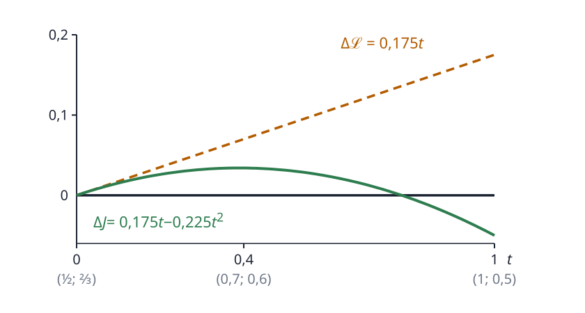
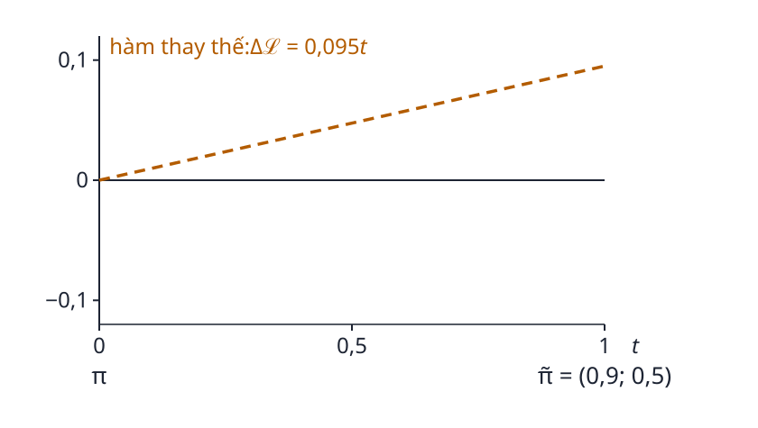
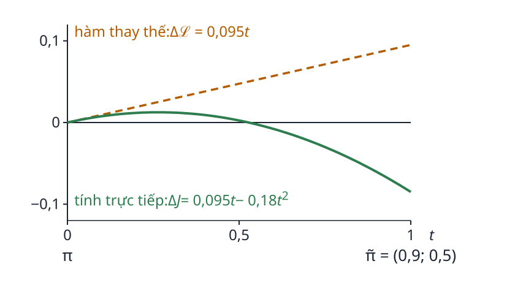
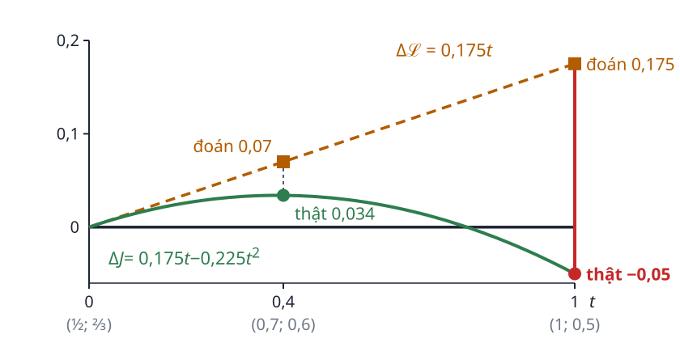
Câu hỏi nhanh: bước ngắn trên đoạn thẳng
Bước ngắn $t=0{,}25$ cho chính sách $(0{,}6;\,0{,}625)$.
Câu hỏi: hàm thay thế dự báo $\Delta J$ bao nhiêu, sai số bao nhiêu, và $J$ có tăng không?
Lời giải: $\Delta\mathcal L=0{,}095\cdot0{,}25\approx0{,}024$. Sai số $-0{,}18\cdot0{,}25^2\approx-0{,}011$; $\Delta J=0{,}0125\gt0$, cùng dấu với $\Delta\mathcal L$. Sai số nhỏ hơn ở $\tilde\pi$ $16$ lần, bằng $(1/0{,}25)^2$.
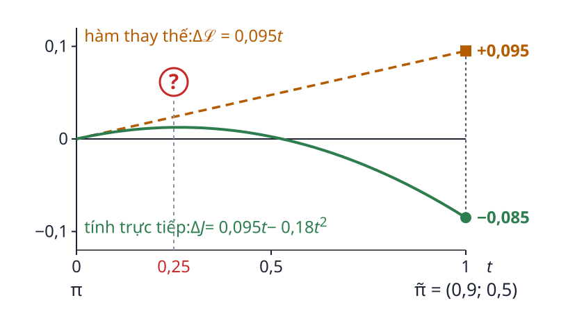
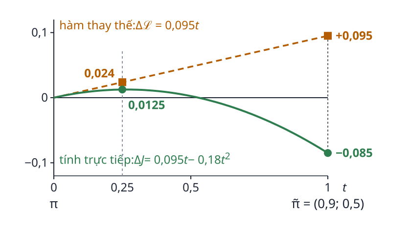
Biến phân toàn phần và phân bố chiếm dụng
Để chặn sai số cho mọi MDP, cần đo khoảng cách giữa $\pi'$ và $\pi$ tại mỗi trạng thái.
Trực quan. Khoảng cách giữa hai phân phối hành động đo được bằng lượng xác suất phải dời để biến phân phối này thành phân phối kia.
Định nghĩa. Khoảng cách biến phân toàn phần (total variation distance, TV) giữa $\pi'$ và $\pi$ tại $s$ là
Ký hiệu: phân bố chiếm dụng (occupancy distribution) $\nu^\pi(s)=(1-\gamma)\,\eta_\pi(s)$, $\sum_s\nu^\pi(s)\le1$, $\mathbb E_{\nu^\pi}[f]=\sum_s\nu^\pi(s)f(s)$; $\chi_{\pi'}=\max_s|A_\pi(s,\pi')|$.
Ở đây, với $\tilde\pi$: $D_{\mathrm{TV}}(s_A)=\tfrac12(0{,}4+0{,}4)=0{,}4$, $D_{\mathrm{TV}}(s_B)=\tfrac12(\tfrac16+\tfrac16)=\tfrac16$; $\nu^\pi=0{,}1\cdot(1;\,0{,}45)=(0{,}1;\,0{,}045)$, $\mathbb E_{\nu^\pi}[D_{\mathrm{TV}}]=0{,}1\cdot0{,}4+0{,}045\cdot\tfrac16=0{,}0475$; $\chi_{\tilde\pi}=\max(0{,}32;\,0{,}5)=0{,}5$.
Định lý chặn cải thiện
Định lý (chặn cải thiện, policy improvement bound). Giả thiết: giả thiết chung. Kết luận:
$$J(\pi')-J(\pi)\ \ge\ \Delta\mathcal L-\frac{2\gamma\,\chi_{\pi'}}{(1-\gamma)^2}\,\mathbb E_{S\sim\nu^\pi}\bigl[D_{\mathrm{TV}}(S)\bigr].$$Ý nghĩa: nếu số hạng phạt nhỏ hơn $\Delta\mathcal L$ thì $J$ tăng. Với $\gamma=0{,}9$, thừa số $\gamma/(1-\gamma)^2=0{,}9/0{,}01=90$.
Ý tưởng chứng minh: định lý chặn cải thiện
Bước 1 (đẳng thức chính xác): bổ đề hiệu hiệu năng, $\Delta J=\sum_s\eta_{\pi'}(s)A_\pi(s,\pi')$.
Bước 2 (tách): $\eta_{\pi'}=\eta_\pi+(\eta_{\pi'}-\eta_\pi)$. Bước 3 (hàm thay thế): phần với $\eta_\pi$ là $\Delta\mathcal L$.
Bước 4 (bất đẳng thức Hölder): $\sum_s(\eta_{\pi'}-\eta_\pi)(s)A_\pi(s,\pi')\ge-\chi_{\pi'}\sum_s|\eta_{\pi'}(s)-\eta_\pi(s)|$.
Bước 5 (bổ đề dịch chuyển phân bố chiếm dụng): khác biệt ở mỗi bước tích lũy dọc lượt, $\sum_s|\eta_{\pi'}(s)-\eta_\pi(s)|\le\frac{2\gamma}{(1-\gamma)^2}\,\mathbb E_{S\sim\nu^\pi}\bigl[D_{\mathrm{TV}}(S)\bigr]$. $\square$
Câu hỏi: ở Bước 5, vì sao xuất hiện thừa số $1/(1-\gamma)^2$ chứ không phải $1/(1-\gamma)$?
Lời giải: một thừa số $1/(1-\gamma)$ đổi $\nu$ thành $\eta$ (độ dài hiệu dụng của lượt). Thừa số thứ hai đến từ việc khác biệt ở mỗi bước tích lũy qua các bước sau.
Ví dụ: chặn cải thiện trên chuỗi
Nhắc lại: $\nu^\pi=(0{,}1;\,0{,}045)$, $D_{\mathrm{TV}}(s)=\tfrac12\sum_a|\pi'(a\mid s)-\pi(a\mid s)|$, $\chi_{\pi'}=\max_s|A_\pi(s,\pi')|$.
| Bước tới $\tilde\pi$ | Bước chỉ đổi $p_B$ thêm $d\gt0$ | |
|---|---|---|
| $\Delta\mathcal L$ | $0{,}095$ | $0{,}45\cdot3d=1{,}35d$ |
| $D_{\mathrm{TV}}(s_A)$; $D_{\mathrm{TV}}(s_B)$ | $0{,}4$; $\tfrac16$ | $0$; $d$ |
| $\mathbb E_{\nu^\pi}[D_{\mathrm{TV}}]$ | $0{,}1\cdot0{,}4+0{,}045\cdot\tfrac16=0{,}0475$ | $0{,}045d$ |
| $\chi$; $\tfrac{2\gamma\chi}{(1-\gamma)^2}$ | $0{,}5$; $90$ | $3d$; $540d$ |
| cận dưới của $\Delta J$ | $0{,}095-90\cdot0{,}0475=-4{,}18$ | $1{,}35d-24{,}3d^2$ |
| $\Delta J$ tính trực tiếp | $-0{,}085$ | $1{,}35d$ |
Cận đúng nhưng không chặt. Cận chỉ chứng nhận $J$ tăng khi $d\lt1{,}35/24{,}3\approx0{,}056$.
Phân kỳ Kullback–Leibler
Để tối ưu hàm thay thế theo $\theta$ với ràng buộc khoảng cách, khoảng cách cần khả vi theo $\theta$. Phân kỳ Kullback–Leibler (Kullback–Leibler divergence, KL) trơn theo $\theta$ khi $\pi_\theta\gt0$, còn $D_{\mathrm{TV}}$ chứa $|\cdot|$ nên không khả vi tại $\pi'=\pi$. KL tăng không giới hạn khi chính sách mới gần bỏ một hành động, còn $D_{\mathrm{TV}}\le1$.
Định nghĩa. Phân kỳ KL tại $s$, từ $\pi$ tới $\pi'$, và KL trung bình, tổng có trọng số $\nu^\pi$, là
Dạng khác: $D_{\mathrm{KL}}(s)=\mathbb E_{a\sim\pi(\cdot\mid s)}[-\log\rho(s,a)]$, tính được từ hành động của lượt cũ.
Với $\tilde\pi$: $D_{\mathrm{KL}}(s_A)=\tfrac12\log\tfrac{0{,}5}{0{,}9}+\tfrac12\log\tfrac{0{,}5}{0{,}1}=\log\tfrac53\approx0{,}511$, $D_{\mathrm{KL}}(s_B)=\tfrac23\log\tfrac43+\tfrac13\log\tfrac23\approx0{,}0566$, nên $\bar D_{\mathrm{KL}}=0{,}1\cdot0{,}511+0{,}045\cdot0{,}0566\approx0{,}0536$.
Bất đẳng thức Pinsker
Mệnh đề. Giả thiết: $q$, $q'$ là hai phân phối trên tập hữu hạn, logarit tự nhiên. Kết luận:
$$D_{\mathrm{TV}}(q,q')\le\sqrt{\tfrac12D_{\mathrm{KL}}(q\Vert q')},$$cũng đúng với $D_{\mathrm{KL}}(q'\Vert q)$.
Chứng minh. Gộp các phần tử thành hai nhóm $\{q\gt q'\}$ và phần bù, giữ nguyên $D_{\mathrm{TV}}$ và không làm $D_{\mathrm{KL}}$ tăng, rồi chứng minh trên hai điểm.
Ý nghĩa: KL nhỏ kéo theo khoảng cách TV nhỏ. Với $\tilde\pi$, tại $s_A$: $0{,}4\le\sqrt{0{,}511/2}=0{,}505$. Tại $s_B$: $0{,}167\le\sqrt{0{,}0566/2}=0{,}168$.
Chặn cải thiện theo KL trung bình
Hệ quả. Giả thiết: như định lý chặn cải thiện. Kết luận:
$$J(\pi')-J(\pi)\ \ge\ \Delta\mathcal L-\frac{2\gamma\,\chi_{\pi'}}{(1-\gamma)^2}\sqrt{\tfrac12\,\bar D_{\mathrm{KL}}}.$$Chứng minh. Pinsker tại từng trạng thái, rồi Jensen với khối $\sum_s\nu^\pi(s)\le1$.
Ý nghĩa: giữ $\bar D_{\mathrm{KL}}\le\kappa$ thì phạt không vượt $\frac{2\gamma\chi_{\pi'}}{(1-\gamma)^2}\sqrt{\kappa/2}$.
Hệ quả (cải thiện đơn điệu). Giả thiết: như định lý chặn cải thiện cho mỗi cặp $(\pi_k,\pi)$, $A_{\pi_k}$, $\nu^{\pi_k}$ chính xác; $\mathcal M_k(\pi)=\mathcal L_{\pi_k}(\pi)-C_k\,\mathbb E_{\nu^{\pi_k}}[D_{\mathrm{TV}}]$, $C_k=2\gamma\bar\chi_k/(1-\gamma)^2$, $\bar\chi_k=\max_{s,a}|A_{\pi_k}(s,a)|$. Kết luận: nếu $\pi_{k+1}$ cực đại $\mathcal M_k$ thì $J(\pi_{k+1})\ge\mathcal M_k(\pi_{k+1})\ge\mathcal M_k(\pi_k)=J(\pi_k)$.
Chứng minh. Bất đẳng thức đầu theo định lý chặn cải thiện, bất đẳng thức thứ hai vì $\pi_{k+1}$ cực đại $\mathcal M_k$, đẳng thức cuối vì $\mathcal L_{\pi_k}(\pi_k)=J(\pi_k)$ và $D_{\mathrm{TV}}=0$.
Bài toán miền tin cậy
Theo hệ quả chặn cải thiện theo KL trung bình, giữ $\bar D_{\mathrm{KL}}$ nhỏ thì phạt nhỏ.
Định nghĩa. Với bán kính $\kappa\gt0$, bài toán miền tin cậy (trust region problem) là tìm $\theta$ cực đại $\mathcal L_\pi(\pi_\theta)$ với ràng buộc $\bar D_{\mathrm{KL}}(\pi\Vert\pi_\theta)\le\kappa$.
Trên đoạn thẳng từ $\pi$ tới $\tilde\pi$, $\bar D_{\mathrm{KL}}(t)=0{,}1\,D_{\mathrm{KL}}(s_A)+0{,}045\,D_{\mathrm{KL}}(s_B)$ với $p=(\tfrac12+0{,}4t;\,\tfrac23-\tfrac t6)$; nghiệm số của $\bar D_{\mathrm{KL}}(t)=0{,}01$ là $t\approx0{,}515$. Tại đó $(p_A;\,p_B)=(0{,}706;\,0{,}581)$ và $\bar D_{\mathrm{KL}}=0{,}1\cdot0{,}093+0{,}045\cdot0{,}0155=0{,}0100$.
Ý nghĩa: trên chuỗi, với $\kappa=0{,}01$, ràng buộc giữ $t\le0{,}515$, nơi $\Delta J\ge0$, và loại $\tilde\pi$, có $\bar D_{\mathrm{KL}}=0{,}0536\gt\kappa$.

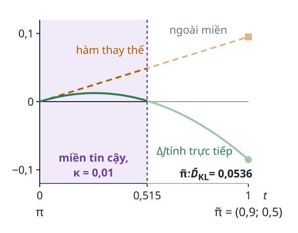
Xấp xỉ bậc hai của KL trung bình
Bài toán miền tin cậy không có nghiệm dạng đóng. Gần $\theta$, thay $\mathcal L$ bằng xấp xỉ bậc một và $\bar D_{\mathrm{KL}}$ bằng xấp xỉ bậc hai.
Mệnh đề. Giả thiết: giả thiết chung, $\pi_\theta$ khả vi liên tục hai lần, $\nu^\pi$ giữ cố định. Đặt ma trận thông tin Fisher (Fisher information matrix) $F=\sum_s\nu^\pi(s)\,\mathbb E_{a\sim\pi}\bigl[\psi(s,a)\psi(s,a)^\top\bigr]$. Kết luận:
$$\bar D_{\mathrm{KL}}(\theta+\Delta)=\tfrac12\Delta^\top F\Delta+o(\lVert\Delta\rVert^2).$$Chứng minh. $\bar D_{\mathrm{KL}}$ có cực tiểu $0$ tại $\theta$ nên gradient bằng $0$, và Hessian của $-\mathbb E_{a\sim\pi}\log\pi_\theta(a\mid s)$ tại $\theta$ là $\mathbb E[\psi\psi^\top]$.
Ở đây $F$ chéo với $F_s=\nu^\pi(s)\,p_s(1-p_s)$, nên $F=\operatorname{diag}(0{,}1\cdot\tfrac14;\,0{,}045\cdot\tfrac29)=\operatorname{diag}(0{,}025;\,0{,}01)$. $F_B\lt F_A$ chủ yếu vì $\nu^\pi(s_B)=0{,}045\lt0{,}1$, nên đổi $\theta_B$ ít làm đổi KL trung bình hơn.
Gradient tự nhiên tập trung bước cập nhật vào $\theta_B$
Mệnh đề (bước gradient tự nhiên). Giả thiết: $g=\nabla\mathcal L\ne0$, $F$ xác định dương. Kết luận: bài toán $\max_\Delta g^\top\Delta$ với $\tfrac12\Delta^\top F\Delta\le\kappa$ có nghiệm
$$\Delta^*=\sqrt{\frac{2\kappa}{g^\top F^{-1}g}}\;F^{-1}g .$$Chứng minh. Với tích trong $\langle x,y\rangle_F=x^\top Fy$, bất đẳng thức Cauchy–Schwarz cho $g^\top\Delta=\langle F^{-1}g,\Delta\rangle_F\le\sqrt{g^\top F^{-1}g}\,\sqrt{2\kappa}$, dấu bằng khi $\Delta$ cùng hướng $F^{-1}g$. Hướng $F^{-1}g$ gọi là gradient tự nhiên (natural gradient).
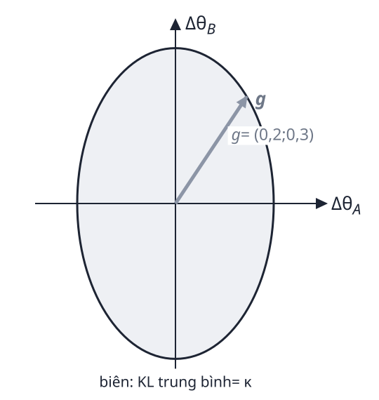

Trên chuỗi, $g=\nabla\mathcal L=(0{,}2;\,0{,}3)$ cho gradient tự nhiên $F^{-1}g=(0{,}2/0{,}025;\,0{,}3/0{,}01)=(8;\,30)$.
Ví dụ: một bước TRPO trên chuỗi
Ví dụ dùng $g=\nabla\mathcal L$ và $F$ tính chính xác theo $\nu^\pi$.
Tính hướng: $g=(0{,}2;\,0{,}3)$, $F^{-1}g=(8;\,30)$, $g^\top F^{-1}g=0{,}2\cdot8+0{,}3\cdot30=10{,}6$.
Chọn độ dài bước ($\kappa=0{,}01$): $\Delta_0=\sqrt{0{,}02/10{,}6}\cdot(8;\,30)=0{,}04344\cdot(8;\,30)=(0{,}3475;\,1{,}3031)$.
Chính sách mới: $p=(\sigma(0{,}3475);\,\sigma(\log2+1{,}3031))=(0{,}5860;\,0{,}8804)$.
KL trung bình tính trực tiếp là $0{,}1\cdot0{,}0150+0{,}045\cdot0{,}156=0{,}0085\le\kappa$, và $\Delta\mathcal L=0{,}8\cdot0{,}0860+1{,}35\cdot0{,}2137=0{,}357\gt0$. Bước $\Delta_0$ thỏa ràng buộc KL và làm hàm thay thế tăng, nên giữ nguyên.
$J=2{,}7p_Ap_B+1-p_A=2{,}7\cdot0{,}5860\cdot0{,}8804+0{,}4140=1{,}807$, tăng từ $1{,}4$.
Tối ưu chính sách miền tin cậy (TRPO)
Thuật toán (trust region policy optimization, TRPO). Đầu vào: $\pi_\theta$, $\hat v_w$; $\gamma$, $\lambda$, $\kappa$, $\zeta\in(0,1)$, $j_{\max}$. Đầu ra: $\theta$, $w$.
- Thu lượt: một bộ đệm (buffer) bằng $\pi_{\mathrm{old}}=\pi_\theta$, lưu $\log\pi_{\mathrm{old}}(A_t\mid S_t)$.
- Ước lượng lợi thế: $\widehat A_t$ bằng GAE.
- Tính hướng: $g=$ trung bình đều trên bộ đệm của $\widehat A_t\psi_t$; giải gần đúng $Fx=g$ bằng gradient liên hợp (conjugate gradient), chỉ dùng tích $Fv$.
- Chọn độ dài bước: $\Delta_0=\sqrt{2\kappa/(x^\top Fx)}\,x$; tìm kiếm lùi (backtracking line search) nhận $\zeta^j\Delta_0$ đầu tiên ($j\le j_{\max}$) có hàm thay thế mẫu tăng, KL mẫu $\le\kappa$.
- Cập nhật critic: hồi quy $\hat v$ về $\widehat A_t+\hat v_{\mathrm{old}}(S_t)$.
Lưu ý: $g$ không có $\gamma^t$. Trung bình trên bộ đệm tỉ lệ với $g^\gamma=\mathbb E[\sum_tA_\pi(S_t,A_t)\psi_t]$. Trên chuỗi $g^\gamma=(0{,}2;\,0{,}333)$, khác $\nabla J=(0{,}2;\,0{,}3)$.
5.Tối ưu chính sách gần kề (PPO)
PPO cắt tỉ số chính sách để dùng lại một bộ đệm nhiều lần bằng gradient bậc một.

Mỗi bộ đệm của TRPO chỉ cho một bước cập nhật
Mỗi vòng TRPO cần tích $Fv$ của ma trận Fisher với một vectơ, gradient liên hợp và tìm kiếm lùi, rồi bỏ bộ đệm sau một bước.
Cần dùng lại một bộ đệm $\mathcal D$ cho nhiều bước cập nhật, mỗi bước chỉ cần gradient bậc một của một hàm mục tiêu.
Ứng viên trực tiếp là hàm thay thế mẫu, trung bình trên bộ đệm, của phương pháp lặp chính sách bảo thủ (conservative policy iteration, CPI):
Câu hỏi: cực đại $\mathcal L^{\mathrm{CPI}}$ không ràng buộc trên một bộ đệm nhỏ cho chính sách nào?
Bộ đệm hai lượt và lợi thế ước lượng
Nhắc lại: critic $\hat v=(1{,}4;\,1)$; GAE với $\lambda=1$ cho $\widehat A_t=G_t-\hat v(S_t)$; $\pi_{\mathrm{old}}=(\tfrac12;\,\tfrac23)$.
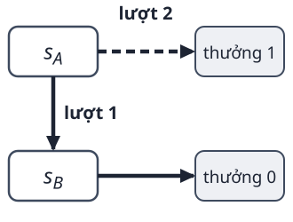
Thu lượt: bộ đệm gồm hai lượt $s_A\xrightarrow1s_B\xrightarrow2$ và $s_A\xrightarrow2$, xác suất $2\cdot\tfrac16\cdot\tfrac12=\tfrac16$. Ước lượng lợi thế:
| Mẫu | $G_t$ | $\widehat A_t=G_t-\hat v(S_t)$ | $A_\pi$ đúng |
|---|---|---|---|
| $(s_A,1)$ | $0+0{,}9\cdot0=0$ | $0-1{,}4=\color{#C62828}{\mathbf{-1{,}4}}$ | $+0{,}4$ |
| $(s_A,2)$ | $1$ | $1-1{,}4=-0{,}4$ | $-0{,}4$ |
| $(s_B,2)$ | $0$ | $0-1=-1$ | $-2$ |
Lợi thế ước lượng của hành động 1 ở $s_A$ sai dấu, vì lượt chọn nó gặp phần thưởng $0$ ở $s_B$.
Hàm thay thế mẫu tuyến tính theo tỉ số nên cực đại nằm ở biên
| Mẫu | $\widehat A_t$ | $\rho_t$ theo $(p_A;\,p_B)$ mới | $\rho_t\widehat A_t$ |
|---|---|---|---|
| $(s_A,1)$ | $-1{,}4$ | $p_A/\tfrac12=2p_A$ | $-2{,}8p_A$ |
| $(s_A,2)$ | $-0{,}4$ | $(1-p_A)/\tfrac12=2-2p_A$ | $-0{,}8+0{,}8p_A$ |
| $(s_B,2)$ | $-1$ | $(1-p_B)/\tfrac13=3-3p_B$ | $-3+3p_B$ |
$\mathcal L^{\mathrm{CPI}}$ giảm theo $p_A$, tăng theo $p_B$, nên tăng mãi khi $(p_A;\,p_B)\to(0;\,1)$, biên của miền xác suất. Lợi thế sai dấu của mẫu $(s_A,1)$ quyết định hướng $p_A\to0$.
Ở giới hạn đó $J=2{,}7\cdot0\cdot1+1-0=1$, giảm $0{,}4$, cùng mức giảm của bước dài theo lượt $s_A\xrightarrow2$ ở mạch 1.
Mục tiêu cắt
Khi $\rho_t\approx1$ trên phân bố trạng thái của $\pi_{\mathrm{old}}$, sai số của hàm thay thế nhỏ. Mục tiêu cắt bỏ phần tăng của $\rho_t\widehat A_t$ khi $\rho_t$ ra ngoài $[1-\epsilon,1+\epsilon]$ theo hướng có lợi (làm tích tăng).


Định nghĩa. Với bán kính cắt (clip range) $\epsilon\in(0,1)$ và $\operatorname{clip}(x,l,u)=\min(\max(x,l),u)$, mục tiêu cắt (clipped surrogate objective) là
Đoạn phẳng: khoảng $\rho_t$ mà số hạng của mẫu không đổi, gradient theo mẫu đó bằng $0$.
Mục tiêu cắt theo dấu của lợi thế
Mệnh đề. Giả thiết: $\epsilon\in(0,1)$. Kết luận: số hạng của mẫu $t$ là:
| Số hạng | Gradient bằng $0$ khi | |
|---|---|---|
| $\widehat A_t\gt0$ | $\widehat A_t\,\min(\rho_t,\,1+\epsilon)$ | $\rho_t\gt1+\epsilon$ |
| $\widehat A_t\lt0$ | $\widehat A_t\,\max(\rho_t,\,1-\epsilon)$ | $\rho_t\lt1-\epsilon$ |
| $\widehat A_t=0$ | $0$ | mọi $\rho_t$ |
Ngoài các tập đó, gradient là $\widehat A_t\,\rho_t\,\psi_t$. Ở đây, mẫu $(s_A,1)$ với $\rho=1$ cho $-1{,}4\max(1;\,0{,}8)=-1{,}4$.
Chứng minh. Nhân với $\widehat A_t\gt0$ giữ thứ tự và nhân với $\widehat A_t\lt0$ đảo thứ tự, nên phép $\min$ của định nghĩa thành $\min(\rho_t,1+\epsilon)$ hoặc $\max(\rho_t,1-\epsilon)$.
Câu hỏi nhanh: mẫu lợi thế âm với $\rho=1{,}3$
Mẫu $(s_B,2)$ của bộ đệm: $\widehat A=-1$, $\rho=3(1-p_B)$. Trên bộ đệm này $p_B$ không giảm, vì mỗi trạng thái có tham số riêng và mẫu duy nhất tại $s_B$ có $\widehat A\lt0$, chỉ đẩy $p_B$ tăng. Với tham số dùng chung, bước trên mẫu khác có thể làm $p_B$ giảm. Giả sử $p_B\approx0{,}57$, tức $\rho=1{,}3$.
Câu hỏi: với $\epsilon=0{,}2$, số hạng của mẫu có bị cắt không, và gradient làm $p_B$ thay đổi theo chiều nào?

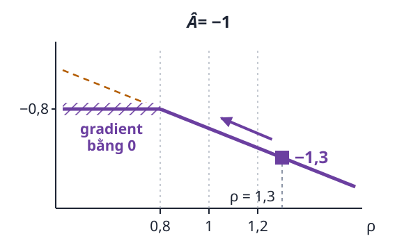
Lời giải: $\min(-1\cdot1{,}3;\ -1\cdot1{,}2)=-1{,}3$, nhánh không cắt. Theo mệnh đề, $\widehat A\lt0$ chỉ có gradient $0$ khi $\rho\lt0{,}8$. Gradient khác $0$ làm $\rho$ giảm, tức làm $p_B$ tăng trở lại.
Với phép cắt, $J$ chỉ giảm $0{,}008$
Vòng trong gồm nhiều bước gradient tăng $\mathcal L^{\mathrm{CLIP}}$ trên cùng bộ đệm, lợi thế giữ cố định.
| Trạng thái | Phần của $3\,\mathcal L^{\mathrm{CLIP}}$ | Vòng trong dừng tại |
|---|---|---|
| $s_A$ | $-1{,}4\max(2p_A;\,0{,}8)-0{,}4\max(2-2p_A;\,0{,}8)$ | cực đại, $p_A=0{,}4$ |
| $s_B$ | $-\max(3-3p_B;\,0{,}8)$ | đầu đoạn phẳng, $p_B=11/15$ |
Dưới $p_A=0{,}4$, mẫu $(s_A,2)$ có $\rho\gt1{,}2$, không bị cắt, nên phần của $s_A$ giảm. Tại $(0{,}4;\,11/15)$: $J=2{,}7\cdot0{,}4\cdot11/15+0{,}6=1{,}392$, giảm $0{,}008$ thay cho $0{,}4$. Tại điểm dừng, cả ba tỉ số nằm ở biên khoảng cắt với $\epsilon=0{,}2$, $\rho=(0{,}8;\,1{,}2;\,0{,}8)$.
Phép cắt không sửa lợi thế ước lượng sai, nên $J$ vẫn giảm.
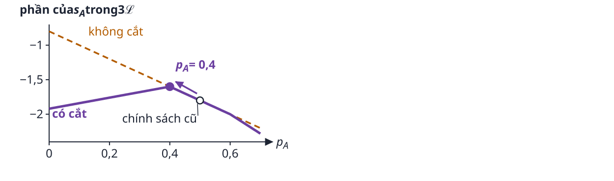
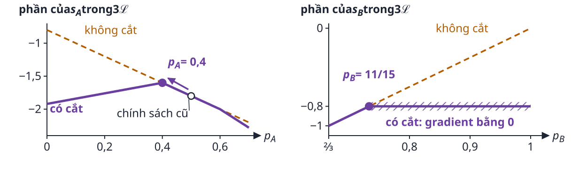
Giới hạn của phép cắt
Nhận xét. Trên đoạn phẳng, gradient của mục tiêu cắt theo $\theta_B$ bằng $0$. Trên bộ đệm hai lượt, với $p_A=0{,}4$:
| $p_B$ | Phần của $s_B$ | $D_{\mathrm{KL}}(s_B)$, chiều cũ‖mới | $J(0{,}4;\,p_B)$ |
|---|---|---|---|
| $\tfrac{11}{15}\approx0{,}733$ | $-0{,}8$ | $0{,}011$ | $1{,}392$ |
| $0{,}85$ | $-0{,}8$ | $0{,}104$ | $1{,}518$ |
| $0{,}95$ | $-0{,}8$ | $0{,}396$ | $1{,}626$ |
- Mục tiêu cắt không chặn KL. Nếu $p_B$ vượt $\tfrac{11}{15}$, mục tiêu không đổi trong khi $D_{\mathrm{KL}}(s_B)$ tăng. Phép cắt chỉ đặt gradient của số hạng bằng $0$ khi tỉ số ra ngoài khoảng theo hướng có lợi.
- Gradient bằng $0$ cả khi tăng $p_B$ làm $J$ tăng, ở đây $\partial J/\partial p_B=2{,}7p_A=1{,}08\gt0$.
Thuật toán PPO-Clip
TRPO cho một bước mỗi bộ đệm và cần phép tính bậc hai. PPO-Clip, dạng cắt của PPO, dùng lại mỗi bộ đệm cho nhiều bước bậc một.
Thuật toán. Đầu vào: $\pi_\theta$, $\hat v_w$; $\gamma$, $\lambda$, $\epsilon$; số lần qua bộ đệm (epoch) $K$, cỡ lô nhỏ (mini-batch) $M$, bước học. Đầu ra: $\theta$, $w$.
- Thu lượt: một bộ đệm $\mathcal D$ bằng $\pi_{\mathrm{old}}=\pi_\theta$; lưu $\log\pi_{\mathrm{old}}(A_t\mid S_t)$ và $\hat v_{\mathrm{old}}(S_t)$.
- Ước lượng lợi thế: $\widehat A_t$ bằng GAE và mục tiêu của critic $\widehat A_t+\hat v_{\mathrm{old}}(S_t)$; giữ cố định trong vòng.
- Vòng trong, lặp $K$ lần: xáo $\mathcal D$, chia lô nhỏ cỡ $M$. Với mỗi lô, tính lại $\rho_t(\theta)$, rồi
- Cập nhật actor: một bước gradient tăng $\mathcal L^{\mathrm{CLIP}}$;
- Cập nhật critic: một bước gradient giảm $(\hat v(S_t,w)-\widehat A_t-\hat v_{\mathrm{old}}(S_t))^2$.
- Dừng sớm (early stopping, tùy chọn) khi KL ước lượng vượt ngưỡng.
So sánh TRPO và PPO
| TRPO | PPO-Clip | |
|---|---|---|
| Quy tắc cập nhật | bước gradient tự nhiên (gradient liên hợp, tích Fisher–vector), tìm kiếm lùi | gradient bậc một của $\mathcal L^{\mathrm{CLIP}}$ trên lô nhỏ |
| Dữ liệu dùng | một bộ đệm, một bước | một bộ đệm, $K$ lần |
| Cách giữ bước gần | $\bar D_{\mathrm{KL}}\le\kappa$ | cắt tỉ số chính sách |
| Bảo đảm | trên bộ đệm: KL mẫu $\le\kappa$, hàm thay thế mẫu tăng. Không bảo đảm $J$ tăng | không chặn KL; gradient $0$ khi tỉ số ra ngoài theo hướng có lợi. Không bảo đảm $J$ tăng |
Bài tập: một vòng PPO-Clip trên chuỗi
Để tách cơ chế cắt khỏi sai số ước lượng, bài dùng lợi thế đúng, giữ cố định: $A_\pi(s_A,\cdot)=(0{,}4;\,-0{,}4)$, $A_\pi(s_B,\cdot)=(1;\,-2)$. Bộ đệm chứa các cặp $(s,a)$ với tần suất hành động bằng $\pi(a\mid s)$, $\pi=(\tfrac12;\,\tfrac23)$, $\eta_\pi=(1;\,0{,}45)$, $\epsilon=0{,}2$. Vòng trong tăng $\mathcal L^{\mathrm{CLIP}}$ từ $\pi$ tới đầu đoạn phẳng; $\pi'$ là chính sách tại đó vòng trong dừng.
Phần của mục tiêu cắt tại $s$:
$$\textstyle\ell_s=\sum_a\pi(a\mid s)\min\bigl(\rho_s(a)A_\pi(s,a),\ \operatorname{clip}(\rho_s(a),0{,}8,1{,}2)A_\pi(s,a)\bigr).$$Câu hỏi: (Bài tập 10.23)
- Viết $\ell_{s_A}$ theo $p_A$, $\ell_{s_B}$ theo $p_B$, và tìm $\pi'$.
- Tính $\Delta\mathcal L$ và $\Delta J$ của $\pi'$.
- Tính $\sum_s\eta_\pi(s)\ell_s(\pi')$ và xếp ba số theo thứ tự tăng.
- Giải thích vì sao $\Delta\mathcal L\lt\Delta J$.
Bài tập: một vòng PPO-Clip trên chuỗi
| Lời giải: | $s_A$ ($p_A\ge\tfrac12$) | $s_B$ ($p_B\ge\tfrac23$) |
|---|---|---|
| $\ell_s$ | $0{,}2\bigl[\min(2p_A;\,1{,}2)-\max(2-2p_A;\,0{,}8)\bigr]$ | $\tfrac23\bigl[\min(1{,}5p_B;\,1{,}2)$ $\quad-\max(3-3p_B;\,0{,}8)\bigr]$ |
| chạm biên | cả hai mẫu tại $p_A=0{,}6$ | $0{,}7\overline3$ (hành động 2), $0{,}8$ (hành động 1) |
| dừng ở | $p'_A=0{,}6$ | $p'_B=0{,}8$ |
| $A_\pi(s,\pi')$ | $0{,}6\cdot0{,}4-0{,}4\cdot0{,}4=0{,}08$ | $0{,}8\cdot1-0{,}2\cdot2=0{,}4$ |
| $\ell_s(\pi')$ | $0{,}24-0{,}16=0{,}08$ | $0{,}8-0{,}5\overline3=0{,}2\overline6$ |
(b) $\Delta\mathcal L=0{,}08+0{,}45\cdot0{,}4=0{,}26$; $\Delta J=2{,}7\cdot0{,}6\cdot0{,}8+0{,}4-1{,}4=0{,}296$. (c) $0{,}08+0{,}45\cdot0{,}2\overline6=0{,}2$; thứ tự $0{,}2\lt0{,}26\lt0{,}296$.
(d) Chỉ $s_B$ đổi số lần thăm: $\eta_{\pi'}(s_B)-\eta_\pi(s_B)=\gamma\Delta p_A=0{,}09\gt0$ và $A_\pi(s_B,\pi')=0{,}4\gt0$, nên sai số $0{,}09\cdot0{,}4=0{,}036\gt0$.
6.Tổng kết
Mỗi phương pháp của bài giảm phương sai hoặc giới hạn bước cập nhật dưới những giả thiết riêng.
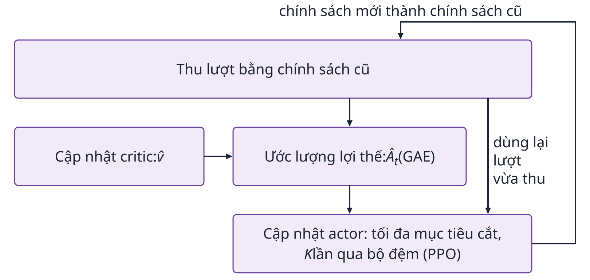
Vòng cập nhật chính sách của bài
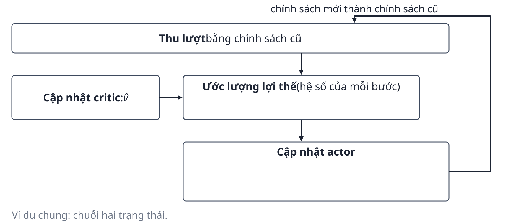
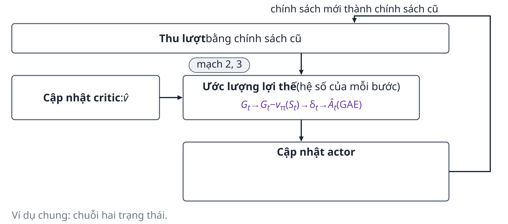
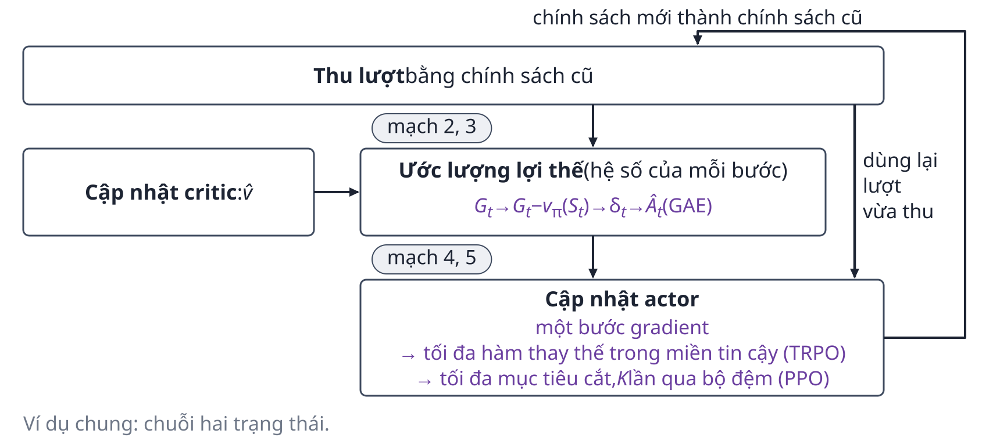
Vấn đề trung tâm
- Làm thế nào để ước lượng gradient chính sách có phương sai nhỏ mà kỳ vọng không đổi?
- Làm thế nào để dùng lượt của chính sách cũ cho bước cập nhật dài mà hàm mục tiêu không giảm?
Trả lời câu 1:
- Trừ một đường cơ sở chỉ phụ thuộc trạng thái giữ nguyên kỳ vọng của ước lượng gradient, và trên ví dụ chung, $b=v_\pi$ làm phương sai giảm.
- Khi $\hat v\ne v_\pi$, sai số TD là ước lượng chệch của lợi thế. GAE cân bằng độ chệch và phương sai bằng $\lambda$, cho ước lượng gradient không chệch khi $\lambda=1$ trên lượt đầy đủ hoặc $\hat v=v_\pi$.
Vấn đề trung tâm: trả lời câu 2
Nhắc lại: câu 2 hỏi cách dùng lượt của chính sách cũ cho bước cập nhật dài mà hàm mục tiêu không giảm.
Trả lời câu 2:
- Hàm thay thế tính được từ lượt của chính sách cũ và tiếp xúc $J$ tại chính sách cũ. Khi lợi thế và số lần thăm tính chính xác, $J$ không giảm nếu mức tăng của hàm thay thế vượt phạt tỉ lệ với kỳ vọng khoảng cách TV, hoặc với căn của KL trung bình. Thừa số của phạt là $2\gamma\chi_{\pi'}/(1-\gamma)^2$.
- TRPO giữ KL trung bình mẫu trên bộ đệm không vượt $\kappa$. PPO dùng lại bộ đệm $K$ lần, cắt tỉ số chính sách và không chặn KL. Với lợi thế ước lượng, cả hai đều có thể làm $J$ giảm.
Ví dụ chung của bài là chuỗi hai trạng thái.
Kết quả và giả thiết (1)
| Kết quả | Giả thiết không được bỏ | Công thức hoặc thuật toán |
|---|---|---|
| Đường cơ sở không làm chệch ước lượng gradient | $b$ không phụ thuộc hành động đã chọn; lượt sinh bởi $\pi_\theta$ | $\mathbb E\bigl[\sum_t\gamma^t(G_t-b(S_t))\psi_t\bigr]=\nabla J$ |
| Gradient dạng lợi thế | lợi thế của chính $\pi_\theta$; tính Markov | $\nabla J=\mathbb E\bigl[\sum_t\gamma^tA_\pi(S_t,A_t)\psi_t\bigr]$ |
| Sai số TD và lợi thế | giá trị đúng $v_\pi$; điều kiện theo $(S_t,A_t)$ | $\mathbb E[\delta_t\mid S_t,A_t]=A_\pi(S_t,A_t)$ |
| GAE và gradient | $\lambda=1$ trên lượt đầy đủ, hoặc $\hat v=v_\pi$ | $\widehat A_t=\sum_k(\gamma\lambda)^k\delta_{t+k}$; $\mathbb E[\sum_t\gamma^t\widehat A_t\psi_t]=\nabla J$ |
Kết quả và giả thiết (2)
| Kết quả | Giả thiết không được bỏ | Công thức hoặc thuật toán |
|---|---|---|
| Bổ đề hiệu hiệu năng | cùng $P$, cùng $\mu_0$; $\gamma\lt1$ | $J(\pi')-J(\pi)=\sum_s\eta_{\pi'}(s)A_\pi(s,\pi')$ |
| Hàm thay thế tiếp xúc $J$ | $\eta_\pi$, $A_\pi$ chính xác; $\pi\gt0$ | $\mathcal L_\pi(\pi)=J(\pi)$, $\nabla\mathcal L=\nabla J$ tại $\pi$ |
| Chặn cải thiện | như bổ đề | $\Delta J\ge\Delta\mathcal L-\frac{2\gamma\chi}{(1-\gamma)^2}\mathbb E_{\nu^\pi}[D_{\mathrm{TV}}]$, hoặc $\sqrt{\tfrac12\bar D_{\mathrm{KL}}}$ thay $\mathbb E_{\nu^\pi}[D_{\mathrm{TV}}]$ |
| Mục tiêu cắt | lợi thế cố định trong vòng | gradient $0$ khi $\widehat A\gt0,\ \rho\gt1+\epsilon$ hoặc $\widehat A\lt0,\ \rho\lt1-\epsilon$ |
So sánh các phương pháp
| Phương pháp | Quy tắc cập nhật | Dữ liệu dùng | Cách giữ bước gần | Bảo đảm |
|---|---|---|---|---|
| REINFORCE | $\theta\leftarrow\theta+\alpha\sum_t\gamma^tG_t\psi_t$ | một lượt, một lần | bước học nhỏ | ước lượng gradient không chệch |
| Actor–critic với GAE | $\theta\leftarrow\theta+\alpha_\theta\sum_t\gamma^t\widehat A_t\psi_t$; critic về $\widehat A_t+\hat v_{\mathrm{old}}$ | một lượt, một lần | bước học nhỏ | không chệch khi $\lambda=1$ hoặc critic đúng |
| TRPO | bước gradient tự nhiên (gradient liên hợp, tích Fisher–vector), tìm kiếm lùi | một bộ đệm, một bước | $\bar D_{\mathrm{KL}}\le\kappa$ | trên bộ đệm: KL mẫu $\le\kappa$, hàm thay thế mẫu tăng. Không bảo đảm $J$ tăng |
| PPO-Clip | gradient bậc một của $\mathcal L^{\mathrm{CLIP}}$ trên lô nhỏ | một bộ đệm, $K$ lần | cắt tỉ số chính sách | không chặn KL. Không bảo đảm $J$ tăng |
Câu hỏi tự kiểm tra
- Vì sao đường cơ sở không được phụ thuộc hành động đã chọn?
- Vì sao hàm thay thế sai khi số lần thăm có chiết khấu $\eta_{\pi'}$ khác $\eta_\pi$?
- Phép cắt tỉ số có chặn KL giữa chính sách mới và chính sách cũ không?
- Một môi trường có giới hạn thời gian cắt ngắn nhiều lượt. Điểm cắt không phải trạng thái kết thúc của MDP, nên GAE bootstrap từ $\hat v$ ở bước cắt. Với critic sai, GAE với $\lambda=1$ còn cho ước lượng gradient không chệch không?
Bài tập về nhà
| Mạch | Bài tập |
|---|---|
| 1. Giới hạn của REINFORCE | 10.22 |
| 2. Đường cơ sở và hàm lợi thế | ghi chú: 10.1, 10.4, 10.10 |
| 3. Ước lượng lợi thế: độ chệch và phương sai | 10.13, 10.15; ghi chú: 10.5, 10.6, 10.7 |
| 4. Hàm thay thế và miền tin cậy | 10.16, 10.17; ghi chú: 10.8, 10.9, 10.11 |
| 5. Tối ưu chính sách gần kề (PPO) | 10.14; ghi chú: 10.2, 10.3, 10.12, 10.23 (trên lớp) |
Tài liệu tham khảo
- Sutton, Barto. Reinforcement Learning: An Introduction, 2018, §7.1, §12.1–12.3, §13.3–13.5.
- Kakade, Langford. Approximately Optimal Approximate Reinforcement Learning. ICML, 2002. Kakade. A Natural Policy Gradient. NIPS, 2002. Cover, Thomas. Elements of Information Theory, 2006.
- Schulman và cộng sự. Trust Region Policy Optimization. ICML, 2015; High-Dimensional Continuous Control Using Generalized Advantage Estimation. ICLR, 2016; Proximal Policy Optimization Algorithms. arXiv, 2017.
- Achiam và cộng sự. Constrained Policy Optimization. ICML, 2017. Engstrom và cộng sự. Implementation Matters in Deep Policy Gradients: A Case Study on PPO and TRPO. ICLR, 2020. Nota, Thomas. Is the Policy Gradient a Gradient? AAMAS, 2020.
- Tạ Việt Cường. Bài giảng 10, học phần AIT3007, 2025–2026.
Bài tiếp theo: Bài 11, Lập kế hoạch dựa trên mô hình.